[!IMPORTANT] Mundo 6 · Tabelas hash · Rota do jogo: etapa 20 de 29 · módulo bônus ★
Missão: fechar as lacunas de listas, árvores e hash que a prova cobra.
Vem de: Módulo 15 · Tabelas hash. Segue para: Módulo 16 · Grafos.
Checkpoints desta fase:
- Ler os assuntos 0174 a 0181 e refazer os exemplos
- Resolver os 4 exercícios de cada assunto, escrevendo o código sozinho
- Fechar a lista prática (P2801 a P2830)
- Enfrentar os desafios do módulo
- Chefão: resolver as questões de prova do módulo sem consultar
Completa listas, árvores e hash dos módulos 11, 14 e 15 com as versões do Cormen: lista com sentinela, sucessor com ponteiro para o pai, remoção na AVL, rubro-negra clássica, hash por multiplicação, sondagem quadrática e dupla e ordenação estável por chave composta. Termina com uma agenda que junta tudo.
L.nil) e o truque da chave
guardada nelam primo) e
multiplicação (A de Knuth, versão em inteiros)Supõe lista dupla e circular (0079, 0080), BST (0099, 0100), AVL (0101), hash (0105 a 0107), estabilidade (0096, 0120), ponteiro para struct (0062) e TAD (0074).
Cada assunto tem um TAD na pasta (sentinela.h, arvpai.h, avlrem.h,
vermelhopreto.h, espalha.h, sondagem.h, pombal.h, agenda.h), e o
texto mostra só o pedaço do .c que importa. Compile junto os .c de apoio:
gcc ~/LPEDC/material/A353.c ~/LPEDC/material/0177-vermelhopreto.c -o ~/LPEDC/material/A353 -lm && ~/LPEDC/material/A353
Convenções do Cormen: altura conta arestas (folha 0, árvore vazia -1), a raiz
está no nível 0 e o fator é altura(esq) - altura(dir). Confira a definição
do enunciado, porque alguns livros mudam isso.
Nos desenhos, a sentinela e o nó preto são cinza; nas tabelas hash, amarelo marca as posições olhadas e verde, onde achou a chave.
| # | Assunto |
|---|---|
| 0174 | Lista com sentinela |
| 0175 | Conceitos e sucessor |
| 0176 | AVL: remoção |
| 0177 | Rubro-negra clássica |
| 0178 | Hash: divisão e multiplicação |
| 0179 | Sondagem quadrática e dupla |
| 0180 | Pigeonhole e chave composta |
| 0181 | Juntando tudo |
[!NOTE] Cada assunto é um capítulo: Conceito (a explicação), Exemplos de uso (programas que compilam sozinhos: rode com o comando abaixo de cada um e compare com a saída no fim do código) e Exercícios (cada um é um arquivo em
material/com o esqueleto, as dicas e o espaço para a resposta; resoluções em_respostas/28-estruturas-complementos/).
A lista duplamente encadeada do 0079 funciona, mas a remoção dela é cheia de
if. Antes de mexer nos ponteiros, o código pergunta: o nó é o primeiro? É o
último? É o único? Cada pergunta existe por um motivo só: o primeiro nó tem
NULL à esquerda e o último tem NULL à direita. Quem segue x->ant->prox
num nó sem vizinho à esquerda tenta ler um campo de NULL, e o programa cai.
Esses casos especiais são o lugar preferido dos bugs em listas (TENENBAUM;
LANGSAM; AUGENSTEIN, 1995).
Pense numa mesa redonda com uma cadeira vazia reservada. Ninguém senta nela,
mas ela está ali, entre o último e o primeiro convidado. Todo convidado tem
vizinho dos dois lados, nem que seja a cadeira vazia. Na lista, essa cadeira é
o nó sentinela: um nó falso, sem dado, colocado entre o último e o
primeiro, que transforma a lista em duplamente encadeada e circular. O
Cormen o chama de L.nil (CORMEN et al., 2024, cap. 10).
Com a sentinela no lugar, os dois extremos da lista ficam guardados nela
mesma: nil.prox é o primeiro nó real e nil.ant é o último. A lista vazia
é a sentinela sozinha, apontando para si dos dois lados (nil.prox == &nil e
nil.ant == &nil). Repare que nenhum ponteiro dentro da lista vale NULL. É
isso que elimina os casos especiais (CORMEN et al., 2024, cap. 10).
typedef struct NoS {
int chave;
struct NoS *ant, *prox;
} NoS;
typedef struct {
NoS nil; // a sentinela mora dentro da lista, não vem do malloc
int n; // conta só os nós reais
} ListaS;
Veja a inserção de um nó x logo depois de um nó y. São sempre os mesmos
quatro ponteiros: x aponta para y e para o antigo vizinho de y, e esses
dois passam a apontar para x. Se y for a sentinela, o novo nó entra no
começo; se y for o último, entra no fim. O código é o mesmo nos dois casos,
porque y sempre tem vizinho à direita.
A remoção de x fica em duas linhas, sem nenhum if: o vizinho da esquerda
passa a apontar para o da direita (x->ant->prox = x->prox), e o da direita
passa a apontar para o da esquerda (x->prox->ant = x->ant). Funciona para o
primeiro, para o último e para o único, porque os dois vizinhos sempre
existem (CELES; CERQUEIRA; RANGEL, 2016).
A busca anda de nil.prox em diante até achar a chave. Numa lista comum o
laço testa duas coisas a cada volta: se a lista acabou e se achou a chave. O
Cormen usa um truque: antes do laço, ele guarda a chave procurada dentro da
sentinela. Assim o laço sempre para, no pior caso ao voltar à sentinela, e
basta um teste por volta, x->chave != chave. Quando o laço termina, você
olha onde parou: se foi em &L->nil, a chave não estava na lista (CORMEN et
al., 2024, cap. 10).
O preço é um nó a mais por lista, 24 bytes numa máquina de 64 bits (um int,
o alinhamento e dois ponteiros). Como a sentinela fica dentro da struct
ListaS, o endereço &L->nil não muda nunca, e todo laço sabe onde parar:
começa em L->nil.prox e segue enquanto x != &L->nil.
[!WARNING] A sentinela não é um dado: o laço para quando volta a ela e começa em
L->nil.prox. Nunca passe&L->nilparasent_remove: ela não veio domalloc, e ofreederruba o programa.
Uma barbearia guarda as fichas de espera. Chegam 12, 25 e 7; a 25 desiste e sai. A busca pela 40, que não existe, para na sentinela (o nó cinza):
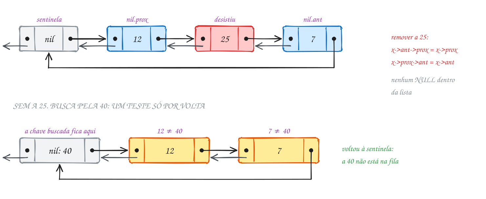
As três funções centrais do sentinela.c; o n conta só os nós reais:
NoS *sent_insere_apos(ListaS *L, NoS *y, int chave) {
NoS *x = malloc(sizeof(NoS));
if (x == NULL) {
return NULL;
}
x->chave = chave;
x->prox = y->prox; // y sempre tem vizinho: no mínimo, a sentinela
x->ant = y;
y->prox->ant = x;
y->prox = x;
L->n++;
return x;
}
NoS *sent_busca(ListaS *L, int chave) {
L->nil.chave = chave; // a sentinela guarda a chave: o laço sempre para
NoS *x = L->nil.prox;
while (x->chave != chave) {
x = x->prox;
}
return x; // se for &L->nil, a chave não estava na lista
}
void sent_remove(ListaS *L, NoS *x) {
x->ant->prox = x->prox;
x->prox->ant = x->ant;
free(x);
L->n--;
}
O programa da barbearia:
#include <stdio.h>
#include "sentinela.h"
int main(void) {
ListaS *fila = sent_cria();
if (fila == NULL) {
return 1;
}
sent_insere_fim(fila, 12); // fichas na ordem de chegada
sent_insere_fim(fila, 25);
sent_insere_fim(fila, 7);
printf("Fila: ");
sent_mostra(fila);
NoS *x = sent_busca(fila, 25); // a ficha 25 desistiu
if (x != &fila->nil) {
sent_remove(fila, x);
}
printf("Sem a 25: ");
sent_mostra(fila);
printf("De trás para a frente: ");
sent_mostra_inverso(fila);
x = sent_busca(fila, 40);
printf("Ficha 40: %s\n", x == &fila->nil ? "não está na fila" : "na fila");
printf("Na fila: %d\n", fila->n);
sent_libera(fila);
return 0;
}
// Saída:
// Fila: [ 12 25 7 ]
// Sem a 25: [ 12 7 ]
// De trás para a frente: [ 7 12 ]
// Ficha 40: não está na fila
// Na fila: 2
A busca da ficha 40 passa pelo 12 e pelo 7 e para na sentinela, que guarda 40. "Parou na sentinela?" separa "achou" de "não está":
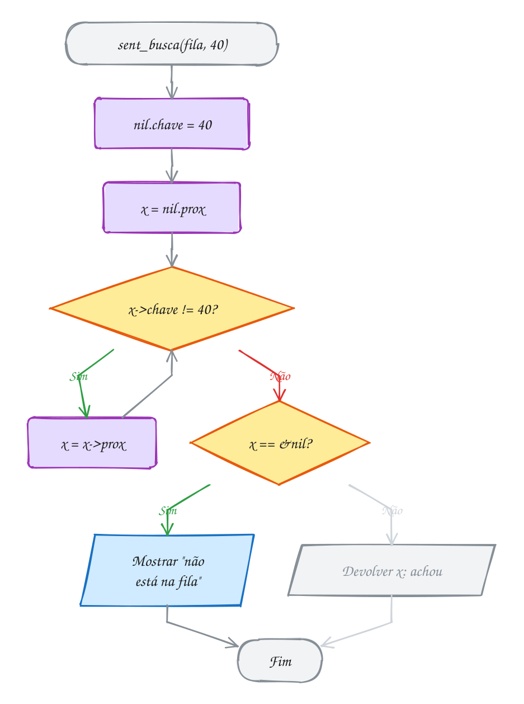
Exemplo A347 · Vazia, um nó, vários: o mesmo código
#include <stdio.h>
#include "0174-sentinela.h"
// mostra a lista e para onde a sentinela aponta
void raio_x(const char *passo, const ListaS *L) {
printf("%s ", passo);
sent_mostra(L);
printf(" nil.prox é %s | nil.ant é %s | n = %d\n",
L->nil.prox == &L->nil ? "a própria nil" : "um nó",
L->nil.ant == &L->nil ? "a própria nil" : "um nó", L->n);
}
int main(void) {
ListaS *L = sent_cria();
if (L == NULL) {
return 1;
}
raio_x("criada:", L);
NoS *a = sent_insere_fim(L, 50); // lista vazia: nenhum if especial
raio_x("insere 50 no fim:", L);
sent_remove(L, a); // remove o único nó: o mesmo código de sempre
raio_x("remove o 50:", L);
sent_insere_fim(L, 10);
sent_insere_fim(L, 20);
sent_insere_fim(L, 30);
raio_x("insere 10, 20, 30:", L);
sent_remove(L, L->nil.prox); // o primeiro
sent_remove(L, L->nil.ant); // o último
raio_x("tira o primeiro e o último:", L);
sent_libera(L);
return 0;
}
// Saída:
// criada: [ ]
// nil.prox é a própria nil | nil.ant é a própria nil | n = 0
// insere 50 no fim: [ 50 ]
// nil.prox é um nó | nil.ant é um nó | n = 1
// remove o 50: [ ]
// nil.prox é a própria nil | nil.ant é a própria nil | n = 0
// insere 10, 20, 30: [ 10 20 30 ]
// nil.prox é um nó | nil.ant é um nó | n = 3
// tira o primeiro e o último: [ 20 ]
// nil.prox é um nó | nil.ant é um nó | n = 1
gcc ~/LPEDC/material/A347.c ~/LPEDC/material/0174-sentinela.c -o ~/LPEDC/material/A347 && ~/LPEDC/material/A347
Exemplo A348 · Juntar duas filas em O(1)
#include <stdio.h>
#include "0174-sentinela.h"
// o caixa b fecha: a fila dele vai inteira para o fim da fila a.
// Quatro ponteiros, não importa o tamanho das filas.
void concatena(ListaS *a, ListaS *b) {
if (b->n == 0) {
return; // b vazia: a sentinela de b não pode entrar em a
}
NoS *ultimo_a = a->nil.ant;
NoS *primeiro_b = b->nil.prox;
NoS *ultimo_b = b->nil.ant;
ultimo_a->prox = primeiro_b; // costura o fim de a no começo de b
primeiro_b->ant = ultimo_a;
ultimo_b->prox = &a->nil; // o fim de b passa a fechar o anel de a
a->nil.ant = ultimo_b;
a->n += b->n;
b->nil.prox = &b->nil; // b fica vazia, pronta para outro uso
b->nil.ant = &b->nil;
b->n = 0;
}
int main(void) {
ListaS *caixa1 = sent_cria();
ListaS *caixa2 = sent_cria();
if (caixa1 == NULL || caixa2 == NULL) {
sent_libera(caixa1 != NULL ? caixa1 : caixa2);
return 1;
}
int f1[] = {101, 102, 103};
int f2[] = {201, 202, 203, 204};
for (int i = 0; i < 3; i++) {
sent_insere_fim(caixa1, f1[i]);
}
for (int i = 0; i < 4; i++) {
sent_insere_fim(caixa2, f2[i]);
}
printf("Caixa 1: ");
sent_mostra(caixa1);
printf("Caixa 2: ");
sent_mostra(caixa2);
concatena(caixa1, caixa2);
printf("O caixa 2 fechou.\n");
printf("Caixa 1: ");
sent_mostra(caixa1);
printf("Ao contrário: ");
sent_mostra_inverso(caixa1);
printf("Caixa 2: ");
sent_mostra(caixa2);
printf("Tamanhos: %d e %d\n", caixa1->n, caixa2->n);
sent_libera(caixa1);
sent_libera(caixa2);
return 0;
}
// Saída:
// Caixa 1: [ 101 102 103 ]
// Caixa 2: [ 201 202 203 204 ]
// O caixa 2 fechou.
// Caixa 1: [ 101 102 103 201 202 203 204 ]
// Ao contrário: [ 204 203 202 201 103 102 101 ]
// Caixa 2: [ ]
// Tamanhos: 7 e 0
gcc ~/LPEDC/material/A348.c ~/LPEDC/material/0174-sentinela.c -o ~/LPEDC/material/A348 && ~/LPEDC/material/A348
Exercício E1039 · ★☆☆
O carrinho do mercado virou uma lista com sentinela (sentinela.h). Os preços, em centavos, entram no fim: 1250, 899, 2340 e 475. Escreva soma(L), que percorre do L->nil.prox até voltar à sentinela e devolve o total. Mostre a lista e o total em reais.
Saída esperada:
Carrinho: [ 1250 899 2340 475 ]
Total: R$ 49.64
gcc ~/LPEDC/material/E1039.c ~/LPEDC/material/0174-sentinela.c -o ~/LPEDC/material/E1039 && ~/LPEDC/material/E1039
Exercício E1041 · ★★☆
A agenda do dentista guarda os horários do dia (em HHMM) em ordem. Escreva insere_ordenado(L, h), que anda a partir de L->nil.prox enquanto não voltou à sentinela e a chave é menor que h, e então insere antes do nó onde parou, com sent_insere_apos(L, p->ant, h). Isso vale para a lista vazia, para o começo e para o fim, sem nenhum caso especial. Insira 1400, 900, 1630, 800 e 1100 e mostre a lista depois de cada um.
Saída esperada:
[ 1400 ]
[ 900 1400 ]
[ 900 1400 1630 ]
[ 800 900 1400 1630 ]
[ 800 900 1100 1400 1630 ]
gcc ~/LPEDC/material/E1041.c ~/LPEDC/material/0174-sentinela.c -o ~/LPEDC/material/E1041 && ~/LPEDC/material/E1041
Exercício E1042 · ★★☆
O leitor de código de barras do caixa travou e registrou o mesmo produto várias vezes. Escreva remove_todas(L, codigo), que tira da lista com sentinela (sentinela.h) todos os nós com aquele código e devolve quantos saíram. A lista tem 7, 3, 3, 9, 3, 5, 3. Remova os 3 e depois os 8.
Saída esperada:
Antes: [ 7 3 3 9 3 5 3 ]
Removidos 4 do código 3: [ 7 9 5 ]
Removidos 0 do código 8: [ 7 9 5 ]
gcc ~/LPEDC/material/E1042.c ~/LPEDC/material/0174-sentinela.c -o ~/LPEDC/material/E1042 && ~/LPEDC/material/E1042
Exercício E1044 · ★★★
O ônibus chegou ao ponto final e volta pelo mesmo caminho: a lista de paradas tem que ser invertida. Escreva inverte(L), que inverte a lista com sentinela (sentinela.h) sem criar nem liberar nó nenhum: em cada nó, INCLUINDO a sentinela, troque ant com prox. Teste com as paradas 10, 20, 30, 40 e com uma lista vazia (que deve continuar funcionando sem if).
Saída esperada:
ida: [ 10 20 30 40 ]
volta: [ 40 30 20 10 ]
volta ao contrário: [ 10 20 30 40 ]
vazia invertida: [ ]
gcc ~/LPEDC/material/E1044.c ~/LPEDC/material/0174-sentinela.c -o ~/LPEDC/material/E1044 && ~/LPEDC/material/E1044
Questão de prova sobre árvore quase sempre começa com vocabulário: "qual a altura do nó 7?", "quantas folhas há no nível 2?". Se você conta altura por nós e o enunciado conta por arestas, erra a questão sabendo o assunto. Por isso este assunto fixa os termos antes de chegar à pergunta que dá o nome a ele: numa árvore binária de busca, qual chave vem logo depois de uma chave dada?
Comece pelo grau de um nó, que é quantos filhos ele tem. Numa árvore binária o grau vai de 0 a 2. Nó de grau 0 é uma folha: não tem ninguém abaixo. O grau da árvore é o maior grau entre todos os nós (SZWARCFITER; MARKENZON, 2010). Uma árvore binária com pelo menos um nó de dois filhos tem grau 2.
Depois vêm as medidas de posição. A profundidade de um nó é o número de arestas no caminho dele até a raiz; a raiz tem profundidade 0, os filhos dela têm 1, os netos, 2. O nível agrupa os nós de mesma profundidade, e a raiz fica no nível 0 (CORMEN et al., 2024, cap. 12). Aqui mora a primeira armadilha: alguns livros contam o nível a partir de 1, com a raiz no nível 1. Antes de responder, confira qual convenção o enunciado usa.
A altura olha para baixo: é o maior número de arestas do nó até uma folha
abaixo dele. Folha tem altura 0, porque não desce nada. A altura da árvore é
a altura da raiz, e a árvore vazia tem altura -1 por convenção, o que faz a
conta 1 + max(altura(esq), altura(dir)) funcionar até no nó sem filhos
(CORMEN et al., 2024, cap. 12). Profundidade conta para cima, altura conta
para baixo; o curso segue o Cormen e conta as duas em arestas, como no módulo
14.
Com a altura em mãos sai o fator de balanceamento de um nó:
altura(esq) - altura(dir). Fator positivo quer dizer que a esquerda pesa
mais; negativo, a direita. A AVL do 0101 mantém o fator de todo nó em -1, 0
ou 1, e essa regra garante altura O(log n) (ADELSON-VELSKY; LANDIS, 1962).
Agora a pergunta do sucessor. Pense no painel de uma rodoviária com os
horários guardados numa BST: qual ônibus sai logo depois do seu? Em ordem
crescente, o sucessor de um nó x é o nó com a menor chave maior que a
de x. O antecessor é o espelho, a maior chave menor que a de x
(CORMEN et al., 2024, cap. 12). Há dois casos.
No caso 1, x tem subárvore direita. Tudo o que é maior que x e está
abaixo dele mora ali, e o menor desses é o mínimo da subárvore direita:
você desce uma vez à direita e depois vai sempre à esquerda até não poder
mais. Numa árvore com 8 na raiz, 10 à direita e 9 à esquerda do 10, o
sucessor do 8 é o 9.
No caso 2, x não tem subárvore direita, e o sucessor é um ancestral. Para
achá-lo, você sobe. Enquanto sobe vindo de um filho direito, o ancestral é
menor que x e não serve. O primeiro ancestral alcançado vindo de um filho
esquerdo é a resposta, porque x está à esquerda dele e, portanto, ele
é maior. Se a subida passar da raiz sem achar esse ancestral, x é a maior
chave da árvore e não tem sucessor (CORMEN et al., 2024, cap. 12).
O caso 2 precisa subir, e o nó de uma BST comum só aponta para baixo. Por isso
cada nó ganha um ponteiro pai (o x.p do Cormen), que vale NULL na
raiz. Com ele, a subida dispensa pilha e recursão. O custo é de 8 bytes a mais
por nó numa máquina de 64 bits. Sucessor e antecessor percorrem no máximo um
caminho da raiz até uma folha, então custam O(h), com h a altura da árvore
(CORMEN et al., 2024, cap. 12).
[!WARNING] Trocar o lado na subida (
x == y->esqno lugar dex == y->dir) dá um "sucessor" menor quex. Toda inserção, remoção ou rotação também tem que acertar opai(o da raiz ficaNULL).
Os horários de ônibus de uma rodoviária entram numa BST na ordem 8h00, 6h15, 10h30, 7h00, 6h50, 9h20, 12h00, 7h30. O sucessor das 8h00 é caso 1 (10h30 e depois à esquerda, 9h20); o das 7h30 é caso 2 e sobe até o 8h00. Ao lado de cada nó, a profundidade e a altura:
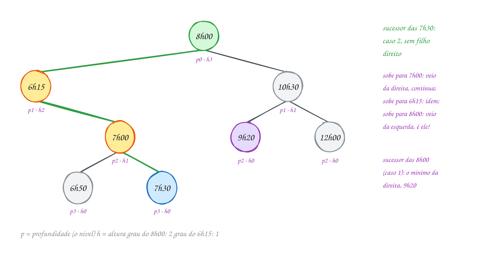
O sucessor no arvpai.c:
NoP *ap_sucessor(NoP *x) {
if (x->dir != NULL) {
return ap_minimo(x->dir); // caso 1: o menor da subárvore direita
}
NoP *y = x->pai; // caso 2: sobe até chegar por um filho esquerdo
while (y != NULL && x == y->dir) {
x = y;
y = y->pai;
}
return y;
}
O painel mostra os conceitos de três nós e as perguntas de horário:
#include <stdio.h>
#include "arvpai.h"
void hora(const NoP *x) {
if (x == NULL) {
printf("nenhum");
} else {
printf("%dh%02d", x->chave / 100, x->chave % 100);
}
}
int main(void) {
int saidas[] = {800, 615, 1030, 700, 650, 920, 1200, 730};
NoP *raiz = NULL;
for (int i = 0; i < 8; i++) {
raiz = ap_insere(raiz, saidas[i]);
}
int olhar[] = {800, 615, 730};
for (int i = 0; i < 3; i++) {
NoP *x = ap_busca(raiz, olhar[i]);
printf("%4d: grau %d | nível %d | altura %d | fator %2d\n", x->chave,
ap_grau(x), ap_profundidade(x), ap_altura(x), ap_fator(x));
}
printf("Altura da árvore: %d\n", ap_altura(raiz));
int perguntas[] = {730, 800};
for (int i = 0; i < 2; i++) {
NoP *x = ap_busca(raiz, perguntas[i]);
printf("Depois das ");
hora(x);
printf(" sai o das ");
hora(ap_sucessor(x));
printf("; antes, o das ");
hora(ap_antecessor(x));
printf("\n");
}
raiz = ap_libera(raiz);
return 0;
}
// Saída:
// 800: grau 2 | nível 0 | altura 3 | fator 1
// 615: grau 1 | nível 1 | altura 2 | fator -2
// 730: grau 0 | nível 3 | altura 0 | fator 0
// Altura da árvore: 3
// Depois das 7h30 sai o das 8h00; antes, o das 7h00
// Depois das 8h00 sai o das 9h20; antes, o das 7h30
O fluxograma segue o sucessor das 7h30: sobe duas vezes vindo da direita; na terceira, o 6h15 é filho esquerdo do 8h00 e o laço para:
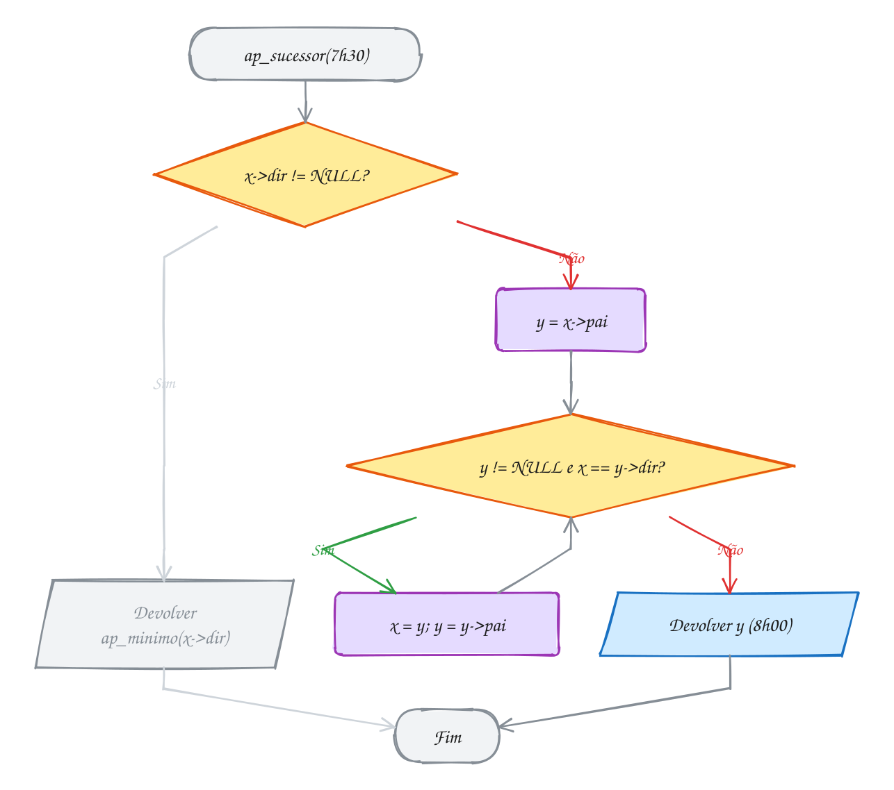
Exemplo A349 · Em ordem sem recursão e sem pilha
#include <stdio.h>
#include "0175-arvpai.h"
static int passos = 0; // quantos ponteiros (esq, dir ou pai) foram seguidos
static NoP *minimo_contando(NoP *x) {
while (x->esq != NULL) {
x = x->esq;
passos++;
}
return x;
}
// o mesmo TREE-SUCCESSOR do arvpai.c, contando cada ponteiro seguido
static NoP *sucessor_contando(NoP *x) {
if (x->dir != NULL) {
passos++;
return minimo_contando(x->dir);
}
NoP *y = x->pai;
passos++;
while (y != NULL && x == y->dir) {
x = y;
y = y->pai;
passos++;
}
return y;
}
int main(void) {
int codigos[] = {50, 30, 70, 20, 40, 60, 80, 35, 45, 65};
int n = 10;
NoP *raiz = NULL;
for (int i = 0; i < n; i++) {
raiz = ap_insere(raiz, codigos[i]);
}
printf("Em ordem:");
for (NoP *x = minimo_contando(raiz); x != NULL; x = sucessor_contando(x)) {
printf(" %d", x->chave);
}
printf("\n%d nós, %d ponteiros seguidos: cada aresta 2 vezes (%d) + o pai NULL da raiz\n",
n, passos, 2 * (n - 1));
printf("Média por sucessor: %.1f, embora um só possa custar a altura (%d)\n",
(double)passos / n, ap_altura(raiz));
raiz = ap_libera(raiz);
return 0;
}
// Saída:
// Em ordem: 20 30 35 40 45 50 60 65 70 80
// 10 nós, 19 ponteiros seguidos: cada aresta 2 vezes (18) + o pai NULL da raiz
// Média por sucessor: 1.9, embora um só possa custar a altura (3)
gcc ~/LPEDC/material/A349.c ~/LPEDC/material/0175-arvpai.c -o ~/LPEDC/material/A349 && ~/LPEDC/material/A349
Exemplo A350 · O próximo ônibus a partir de agora
#include <stdio.h>
#include "0175-arvpai.h"
// teto: a menor chave >= k (NULL se não existe). Desce da raiz guardando o
// último nó em que virou à esquerda: ele é o candidato.
NoP *teto(NoP *r, int k) {
NoP *candidato = NULL;
while (r != NULL) {
if (r->chave == k) {
return r;
}
if (k < r->chave) {
candidato = r; // r serve, mas pode haver um menor à esquerda
r = r->esq;
} else {
r = r->dir;
}
}
return candidato;
}
// piso: a maior chave <= k (o espelho)
NoP *piso(NoP *r, int k) {
NoP *candidato = NULL;
while (r != NULL) {
if (r->chave == k) {
return r;
}
if (k > r->chave) {
candidato = r;
r = r->dir;
} else {
r = r->esq;
}
}
return candidato;
}
void hora(const NoP *x) {
if (x == NULL) {
printf(" --");
} else {
printf("%2dh%02d", x->chave / 100, x->chave % 100);
}
}
int main(void) {
int saidas[] = {800, 615, 1030, 700, 650, 920, 1200, 730};
NoP *raiz = NULL;
for (int i = 0; i < 8; i++) {
raiz = ap_insere(raiz, saidas[i]);
}
int agora[] = {600, 731, 920, 1100, 1300};
for (int i = 0; i < 5; i++) {
printf("Cheguei às %2dh%02d | último que saiu: ", agora[i] / 100, agora[i] % 100);
hora(piso(raiz, agora[i]));
printf(" | próximo: ");
hora(teto(raiz, agora[i]));
printf("\n");
}
raiz = ap_libera(raiz);
return 0;
}
// Saída:
// Cheguei às 6h00 | último que saiu: -- | próximo: 6h15
// Cheguei às 7h31 | último que saiu: 7h30 | próximo: 8h00
// Cheguei às 9h20 | último que saiu: 9h20 | próximo: 9h20
// Cheguei às 11h00 | último que saiu: 10h30 | próximo: 12h00
// Cheguei às 13h00 | último que saiu: 12h00 | próximo: --
gcc ~/LPEDC/material/A350.c ~/LPEDC/material/0175-arvpai.c -o ~/LPEDC/material/A350 && ~/LPEDC/material/A350
Exercício E1045 · ★☆☆
O estoque guarda os códigos 50, 30, 70, 20, 40, 60, 80, 35, 45 e 65, inseridos nessa ordem numa BST (arvpai.h). Escreva conta_graus(r, conta), que percorre a árvore e soma em conta[g] quantos nós têm grau g (0, 1 ou 2 filhos). Mostre as três contagens, o grau da árvore (o maior grau que aparece) e quantas folhas ela tem.
Saída esperada:
grau 0: 5 nós
grau 1: 1 nós
grau 2: 4 nós
grau da árvore: 2 | folhas: 5
gcc ~/LPEDC/material/E1045.c ~/LPEDC/material/0175-arvpai.c -o ~/LPEDC/material/E1045 && ~/LPEDC/material/E1045
Exercício E1047 · ★★☆
A loja de calçados guarda os preços (em centavos) numa BST com pai (arvpai.h): 1890, 990, 2450, 1290, 3100, 750 e 2100, nessa ordem. Mostre os preços do mais caro ao mais barato SEM recursão: comece no ap_maximo e ande com ap_antecessor até chegar em NULL. Depois mostre os vizinhos do preço 12.90 (o antecessor e o sucessor dele).
Saída esperada:
Do mais caro ao mais barato: 31.00 24.50 21.00 18.90 12.90 9.90 7.50
Vizinhos de 12.90: 9.90 e 18.90
gcc ~/LPEDC/material/E1047.c ~/LPEDC/material/0175-arvpai.c -o ~/LPEDC/material/E1047 && ~/LPEDC/material/E1047
Exercício E1048 · ★★☆
Nem toda BST tem ponteiro para o pai. Escreva sucessor_sem_pai(raiz, chave), que acha o sucessor descendo da raiz: se o nó da chave tem subárvore direita, é o mínimo dela; senão, é o ÚLTIMO nó em que a descida virou à esquerda. Com os códigos 50, 30, 70, 20, 40, 60, 80, 35, 45, 65 (arvpai.h), mostre o sucessor de cada chave (-1 para o maior) e confira com ap_sucessor, contando quantas respostas batem.
Saída esperada:
20 -> 30
30 -> 35
35 -> 40
40 -> 45
45 -> 50
50 -> 60
60 -> 65
65 -> 70
70 -> 80
80 -> -1
iguais ao ap_sucessor: 10 de 10
gcc ~/LPEDC/material/E1048.c ~/LPEDC/material/0175-arvpai.c -o ~/LPEDC/material/E1048 && ~/LPEDC/material/E1048
Exercício E1050 · ★★★
Escreva altura_se_avl(r), que devolve a altura da árvore se TODO nó tiver fator de balanceamento -1, 0 ou 1, e -2 se algum nó estiver fora disso. Ela tem que fazer uma passada só (O(n)): cada nó usa as alturas que os filhos devolveram, sem chamar ap_altura. Escreva também mostra_desequilibrados(r), que lista (em ordem) os nós com fator fora de -1..1, com o fator. Teste três BSTs (arvpai.h): os horários 800, 615, 1030, 700, 650, 920, 1200, 730; os códigos 50, 30, 70, 20, 40, 60, 80, 35, 45, 65; e as chaves 1 a 5 em ordem.
Saída esperada:
horários: não é AVL. Desequilibrados: 615 (fator -2)
códigos: é AVL, altura 3
crescente: não é AVL. Desequilibrados: 1 (fator -4) 2 (fator -3) 3 (fator -2)
gcc ~/LPEDC/material/E1050.c ~/LPEDC/material/0175-arvpai.c -o ~/LPEDC/material/E1050 && ~/LPEDC/material/E1050
A AVL do 0101 sabe receber chaves sem perder o equilíbrio. Só que dado também sai: o pedido entregue deixa a fila da cozinha, o cliente cancela a conta. Se a remoção for a da BST comum, um lado da árvore pode encolher até o fator de algum nó chegar a 2 ou -2, e a garantia de altura O(log n) se perde. Este assunto mostra como tirar um nó e consertar a árvore no caminho de volta.
A primeira parte é igual à remoção da BST do 0100, com três casos. Se o nó é folha, ele some. Se tem um filho só, esse filho ocupa o lugar dele, e a subárvore do filho já é AVL. Se tem dois filhos, o nó não pode sumir sem deixar dois órfãos; então você copia para ele a chave do sucessor (o mínimo da subárvore direita, visto no 0175) e remove o sucessor lá embaixo, onde ele tem no máximo um filho (SZWARCFITER; MARKENZON, 2010).
Tirar um nó encurta um caminho da árvore. Os ancestrais do nó removido podem ter perdido um nível de um lado, e o fator deles muda. O conserto segue a ideia da inserção: na volta da recursão, cada ancestral recalcula a própria altura, confere o fator e, se ele passou de 1 ou de -1, faz uma das rotações do 0101 (ADELSON-VELSKY; LANDIS, 1962). Como a remoção é recursiva, a volta passa por todos os ancestrais, um por um, até a raiz.
Duas coisas mudam em relação à inserção, e a prova cobra as duas. A primeira é o fator do filho do lado pesado. Na inserção, o nó novo acabou de entrar por um lado, e esse filho sempre pende para algum lado: fator 1 ou -1. Na remoção, o lado pesado não recebeu nada; ele só ficou mais alto que o outro, e o filho dele pode estar equilibrado, com fator 0 (SZWARCFITER; MARKENZON, 2010).
A regra para escolher a rotação fica assim. Se o filho do lado pesado tem fator 0 ou o mesmo sinal do pai, basta uma rotação simples. Se tem sinal contrário, o peso está "no meio", e só a rotação dupla resolve. Exemplo: um nó com fator 2 (esquerda pesada) e filho esquerdo com fator 0 pede uma rotação simples à direita; com filho esquerdo de fator -1, pede a dupla (esquerda no filho, depois direita no nó). No caso do fator 0, a subárvore mantém a altura de antes depois da rotação, e o conserto para ali.
A segunda diferença é o que acontece depois da rotação. Na inserção, uma rotação devolve a subárvore à altura que ela tinha antes, e o resto da árvore nem percebe. Na remoção, a rotação pode deixar a subárvore um nível mais baixa que antes. Para o avô, é como se outra remoção tivesse acontecido, e o desequilíbrio sobe. Por isso uma remoção pode fazer várias rotações, uma em cada nível, até a raiz: O(log n) rotações no pior caso (ZIVIANI, 2010). O custo total continua O(log n), porque cada rotação mexe em poucos ponteiros.
Um último detalhe vem do caso de dois filhos. O código não move o nó do sucessor para cima: ele copia a chave e libera o nó do sucessor lá embaixo. Se outra parte do programa guardava um ponteiro para o nó do sucessor, esse ponteiro passa a apontar para memória liberada, e usá-lo é comportamento indefinido.
[!WARNING] Copiar da inserção o teste
avr_fator(r->esq) <= 0faz a dupla com fator 0 e deixa a árvore torta. Só o sinal contrário pede a dupla. E não existe "fiz uma rotação, acabou": todo ancestral passa pelorebalanceia.
Uma lanchonete guarda 16 pedidos numa AVL de altura 4, e o 30 sai. O 28 fica pesado à esquerda com o filho 25 pendendo para a direita: rotação dupla. A subárvore cai de altura e a raiz 20 desequilibra: rotação simples, e o 12 vira a raiz:
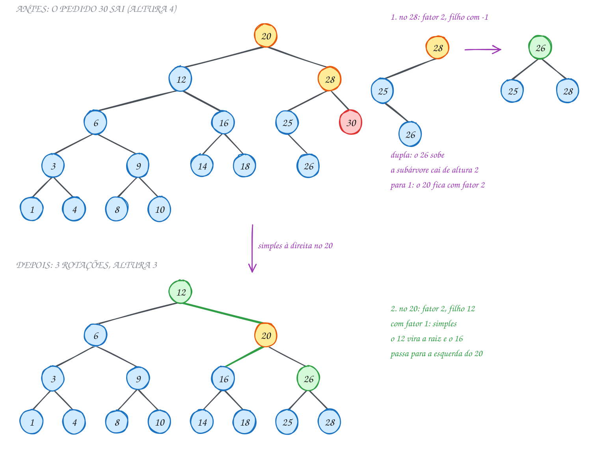
A remoção do avlrem.c, com o rebalanceia das duas operações:
static NoA *rebalanceia(NoA *r) {
atualiza(r);
int fb = avr_fator(r);
if (fb > 1) {
if (avr_fator(r->esq) < 0) { // só -1 pede a dupla; 0 e 1, a simples
r->esq = rot_esquerda(r->esq);
}
return rot_direita(r);
}
if (fb < -1) {
if (avr_fator(r->dir) > 0) {
r->dir = rot_direita(r->dir);
}
return rot_esquerda(r);
}
return r;
}
NoA *avr_remove(NoA *r, int chave) {
if (r == NULL) {
return NULL; // não estava na árvore
}
if (chave < r->chave) {
r->esq = avr_remove(r->esq, chave);
} else if (chave > r->chave) {
r->dir = avr_remove(r->dir, chave);
} else if (r->esq == NULL || r->dir == NULL) {
NoA *filho = r->esq != NULL ? r->esq : r->dir; // 0 ou 1 filho
free(r);
return filho; // o filho (já AVL) ocupa o lugar; o pai confere
} else {
NoA *s = r->dir; // 2 filhos: copia o sucessor e remove ele
while (s->esq != NULL) {
s = s->esq;
}
r->chave = s->chave;
r->dir = avr_remove(r->dir, s->chave);
}
return rebalanceia(r); // na volta, cada ancestral se confere
}
O painel da cozinha:
#include <stdio.h>
#include "avlrem.h"
int main(void) {
int pedidos[] = {20, 12, 28, 6, 16, 25, 30, 3, 9, 14, 18, 26, 1, 4, 10, 8};
NoA *raiz = NULL;
for (int i = 0; i < 16; i++) {
raiz = avr_insere(raiz, pedidos[i]);
}
printf("Antes: pré");
avr_pre_ordem(raiz);
printf(" | altura %d\n", avr_altura(raiz));
int antes = avr_rotacoes();
raiz = avr_remove(raiz, 30); // o pedido 30 foi entregue
printf("Depois: pré");
avr_pre_ordem(raiz);
printf(" | altura %d\n", avr_altura(raiz));
printf("Rotações nesta remoção: %d | fator da raiz: %d\n",
avr_rotacoes() - antes, avr_fator(raiz));
raiz = avr_libera(raiz);
return 0;
}
// Saída:
// Antes: pré 20 12 6 3 1 4 9 8 10 16 14 18 28 25 26 30 | altura 4
// Depois: pré 12 6 3 1 4 9 8 10 20 16 14 18 26 25 28 | altura 3
// Rotações nesta remoção: 3 | fator da raiz: 0
São 3 rotações simples: a dupla no 28 conta 2, a simples no 20 conta 1. O
fluxograma mostra o rebalanceia no 28 (fator 2, filho com fator -1) e, no 20,
o outro ramo (filho com fator 1, só a rotação à direita):
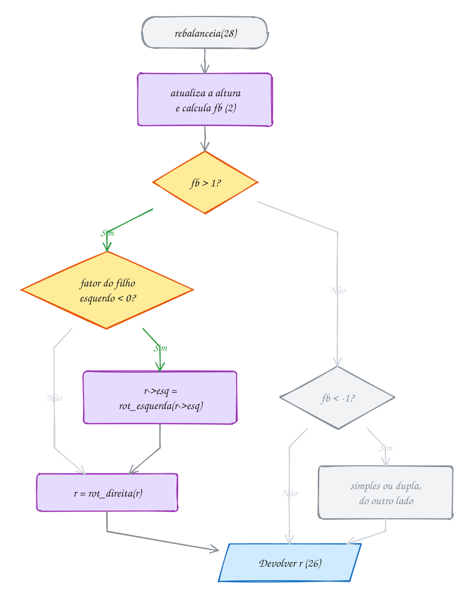
O 30 é folha e devolve NULL ao 28. Daí para cima, cada nó confere a si
mesmo:
| Nó na volta | Altura esq / dir | Fator | Filho pesado | Conserto | Altura da subárvore |
|---|---|---|---|---|---|
| 28 | 1 / -1 | 2 | 25, fator -1 | dupla: esquerda no 25, direita no 28 | era 2, fica 1 (o 26 sobe) |
| 20 | 3 / 1 | 2 | 12, fator 1 | simples: direita no 20 | era 4, fica 3 (o 12 sobe) |
O conserto no 28 encurtou a subárvore e levou o desequilíbrio ao 20. Se o 28 tivesse voltado à altura 2, a remoção pararia ali.
Exemplo A351 · Esvaziando pela esquerda
#include <stdio.h>
#include "0176-avlrem.h"
int main(void) {
NoA *raiz = NULL;
for (int k = 1; k <= 15; k++) { // 15 chaves: árvore perfeita de altura 3
raiz = avr_insere(raiz, k);
}
printf("Cheia: pré");
avr_pre_ordem(raiz);
printf("\n");
for (int k = 1; k <= 10; k++) { // tira sempre o menor
int antes = avr_rotacoes();
raiz = avr_remove(raiz, k);
printf("tira %2d: rotações %d | altura %d | raiz %2d\n", k,
avr_rotacoes() - antes, avr_altura(raiz), raiz->chave);
}
printf("Sobrou: pré");
avr_pre_ordem(raiz);
printf("\n");
raiz = avr_libera(raiz);
return 0;
}
// Saída:
// Cheia: pré 8 4 2 1 3 6 5 7 12 10 9 11 14 13 15
// tira 1: rotações 0 | altura 3 | raiz 8
// tira 2: rotações 0 | altura 3 | raiz 8
// tira 3: rotações 1 | altura 3 | raiz 8
// tira 4: rotações 0 | altura 3 | raiz 8
// tira 5: rotações 0 | altura 3 | raiz 8
// tira 6: rotações 1 | altura 3 | raiz 12
// tira 7: rotações 1 | altura 3 | raiz 12
// tira 8: rotações 0 | altura 2 | raiz 12
// tira 9: rotações 0 | altura 2 | raiz 12
// tira 10: rotações 0 | altura 2 | raiz 12
// Sobrou: pré 12 11 14 13 15
gcc ~/LPEDC/material/A351.c ~/LPEDC/material/0176-avlrem.c -o ~/LPEDC/material/A351 && ~/LPEDC/material/A351
Exemplo A352 · Fator 0 no filho: o caso que só a remoção tem
#include <stdio.h>
#include "0176-avlrem.h"
NoA *monta(const int *v, int n) {
NoA *r = NULL;
for (int i = 0; i < n; i++) {
r = avr_insere(r, v[i]);
}
return r;
}
void relata(const char *nome, NoA *r, int sai) {
printf("%s\n antes: pré", nome);
avr_pre_ordem(r);
printf(" | altura %d | fator do filho esquerdo %d\n", avr_altura(r), avr_fator(r->esq));
r = avr_remove(r, sai);
printf(" tira %d: pré", sai);
avr_pre_ordem(r);
printf(" | altura %d\n", avr_altura(r));
avr_libera(r);
}
int main(void) {
int a[] = {20, 10, 30, 5, 15}; // o 10 tem os dois filhos: fator 0
int b[] = {20, 10, 30, 5}; // o 10 só tem o 5: fator 1
relata("Filho com fator 0:", monta(a, 5), 30);
relata("Filho com fator 1:", monta(b, 4), 30);
return 0;
}
// Saída:
// Filho com fator 0:
// antes: pré 20 10 5 15 30 | altura 2 | fator do filho esquerdo 0
// tira 30: pré 10 5 20 15 | altura 2
// Filho com fator 1:
// antes: pré 20 10 5 30 | altura 2 | fator do filho esquerdo 1
// tira 30: pré 10 5 20 | altura 1
gcc ~/LPEDC/material/A352.c ~/LPEDC/material/0176-avlrem.c -o ~/LPEDC/material/A352 && ~/LPEDC/material/A352
Exercício E1051 · ★☆☆
A biblioteca guarda as matrículas dos leitores com livro emprestado numa AVL (avlrem.h). Insira 50, 25, 75, 10, 30, 60, 80, 5, 15, 27, 55 e 1, nessa ordem. Depois os leitores 80, 75 e 60 devolvem os livros: remova os três, um por vez, mostrando a pré-ordem, a altura e quantas rotações cada remoção fez (use avr_rotacoes antes e depois).
Saída esperada:
início: pré 50 25 10 5 1 15 30 27 75 60 55 80 | altura 4
tira 80: pré 25 10 5 1 15 50 30 27 60 55 75 | altura 3 | rotações 2
tira 75: pré 25 10 5 1 15 50 30 27 60 55 | altura 3 | rotações 0
tira 60: pré 25 10 5 1 15 50 30 27 55 | altura 3 | rotações 0
gcc ~/LPEDC/material/E1051.c ~/LPEDC/material/0176-avlrem.c -o ~/LPEDC/material/E1051 && ~/LPEDC/material/E1051
Exercício E1053 · ★★☆
A fila de prioridade do pronto-socorro está guardada numa AVL (avlrem.h): a menor chave é a mais urgente. Insira as chaves i * 7 % 20, para i de 0 a 19 (são 0 a 19 embaralhados). Depois atenda até esvaziar: ache a menor chave (descendo tudo à esquerda), mostre e remova. No fim, mostre a altura que a árvore tinha no começo e quantas rotações o esvaziamento custou.
Saída esperada:
Atendidos: 0 1 2 3 4 5 6 7 8 9 10 11 12 13 14 15 16 17 18 19
Altura no começo: 4 | rotações para esvaziar: 7
gcc ~/LPEDC/material/E1053.c ~/LPEDC/material/0176-avlrem.c -o ~/LPEDC/material/E1053 && ~/LPEDC/material/E1053
Exercício E1054 · ★★☆
Escreva uma AVL de int do zero (sem TAD): No com chave, altura, esq e dir; alt (altura de NULL é -1), atualiza, gira_dir, gira_esq, equilibra, insere, pre (pré-ordem) e libera. Na remoção, remove_chave, o nó com dois filhos recebe a chave do ANTECESSOR (o maior da subárvore esquerda), que é removido dali; o rebalanceamento acontece na volta da recursão. Insira 40, 20, 60, 10, 30, 50, 70, 25, 35, remova o 40 e depois o 20, mostrando a pré-ordem a cada passo e, no fim, a altura.
Saída esperada:
início: pré 40 20 10 30 25 35 60 50 70
tira 40: pré 35 20 10 30 25 60 50 70
tira 20: pré 35 25 10 30 60 50 70
altura final: 2
gcc ~/LPEDC/material/E1054.c ~/LPEDC/material/0176-avlrem.c -o ~/LPEDC/material/E1054 && ~/LPEDC/material/E1054
Exercício E1056 · ★★★
Na inserção, a AVL faz no máximo uma rotação (simples ou dupla). Na remoção, não: o conserto pode subir até a raiz. O pior caso é a árvore de Fibonacci de altura h: a esquerda é uma árvore de Fibonacci de altura h - 1 e a direita, de altura h - 2 (todo nó tem fator 1). Escreva fibonacci(h), que monta essa árvore direto com malloc (NoA de avlrem.h, campo altura preenchido, chaves 1, 2, 3... em ordem), e, para h de 2 a 9, remova a MAIOR chave com avr_remove e mostre quantos nós havia, quantas rotações a remoção fez e a altura depois.
Saída esperada:
altura 2: 4 nós | rotações 1 | altura depois 1
altura 3: 7 nós | rotações 1 | altura depois 2
altura 4: 12 nós | rotações 2 | altura depois 3
altura 5: 20 nós | rotações 2 | altura depois 4
altura 6: 33 nós | rotações 3 | altura depois 5
altura 7: 54 nós | rotações 3 | altura depois 6
altura 8: 88 nós | rotações 4 | altura depois 7
altura 9: 143 nós | rotações 4 | altura depois 8
gcc ~/LPEDC/material/E1056.c ~/LPEDC/material/0176-avlrem.c -o ~/LPEDC/material/E1056 && ~/LPEDC/material/E1056
Uma BST que recebe chaves quase em ordem vira uma corrente: cada nó novo vai para a direita do anterior, a altura chega a n e a busca volta a custar O(n). No 0145 você viu uma saída para isso, a rubro-negra esquerdista (LLRB). A prova cobra a versão clássica, a do Cormen: as mesmas duas cores, outras regras de conserto e um ponteiro para o pai em cada nó.
A ideia de pintar os nós de duas cores para manter uma árvore balanceada é de Guibas e Sedgewick, e a LLRB é uma variante dela (GUIBAS; SEDGEWICK, 1978). A cor não guarda dado nenhum. Ela serve de etiqueta para impor regras que impedem um caminho de ficar muito mais comprido que outro.
Uma árvore rubro-negra é uma BST em que cada nó tem uma cor, vermelho ou preto, e valem cinco propriedades (CORMEN et al., 2024, cap. 13):
T.nil) é preta;A propriedade 3 fala de "folhas" num sentido próprio. As folhas do Cormen não
guardam chave: elas ocupam os lugares onde a BST comum teria NULL. E não são
várias: todas são um nó só, a sentinela T.nil, preta, como a da lista
do 0174. O pai da raiz também é T.nil (CORMEN et al., 2024, cap. 13). A
vantagem é a mesma da lista: o código lê a cor de qualquer vizinho sem
testar NULL antes, porque o vizinho "vazio" é um nó de verdade.
As propriedades 4 e 5 são as que seguram a altura. A altura negra
bh(x) é o número de nós pretos no caminho de x até uma folha, sem contar
o próprio x e contando a folha T.nil. Pela propriedade 5, esse número é o
mesmo em qualquer caminho, então bh(x) está bem definido. Pela propriedade
4, não existem dois vermelhos seguidos, então pelo menos metade dos nós de
qualquer caminho da raiz até uma folha é preta: bh(raiz) >= h/2. Juntando
isso com o fato de que a subárvore de x tem pelo menos 2^bh(x) - 1 nós,
sai h ≤ 2 log₂(n + 1). Busca, mínimo e sucessor custam O(log n) (CORMEN
et al., 2024, cap. 13).
A inserção começa como a da BST: desce até um lugar vazio e pendura o nó
novo z ali. Depois pinta z de vermelho. A escolha tem motivo: um nó
vermelho não muda a contagem de pretos de caminho nenhum, então a propriedade
5 continua valendo. A única que pode quebrar é a 4, quando o pai de z também
é vermelho. O conserto (RB-INSERT-FIXUP) olha o tio de z, o irmão do
pai dele (CORMEN et al., 2024, cap. 13).
Se o tio é vermelho (caso 1), não há rotação. Pai e tio viram pretos, o avô
vira vermelho, e a contagem de pretos fica igual em todos os caminhos. Só que
o avô agora é vermelho e pode ter pai vermelho, então o problema sobe: z
passa a ser o avô e o laço continua.
Se o tio é preto, o conserto usa rotação, e o formato importa. No caso 2, z
forma um triângulo com o pai e o avô: é filho direito de um filho
esquerdo, ou o espelho. Uma rotação no pai endireita o triângulo e cai no
caso 3. No caso 3, z forma uma linha: filho esquerdo de um filho
esquerdo, ou o espelho. Pinte o pai de preto, o avô de vermelho, gire no avô,
e o conserto acaba. A tabela resume os três:
| Caso | Situação | O que fazer |
|---|---|---|
| 1 | tio vermelho | pinta pai e tio de preto, o avô de vermelho, e sobe: z vira o avô |
| 2 | tio preto, z em triângulo (filho direito de um filho esquerdo, ou o espelho) |
gira no pai e cai no caso 3 |
| 3 | tio preto, z em linha (filho esquerdo de um filho esquerdo, ou o espelho) |
pinta o pai de preto e o avô de vermelho, gira no avô. Acabou |
O caso 1 só troca cores e pode subir até a raiz. Os casos 2 e 3 fazem no máximo duas rotações e encerram. No fim, a raiz é pintada de preto, para garantir a propriedade 2.
A remoção é mais longa: são quatro casos, e o conserto olha o irmão do nó que ficou com um preto a menos no caminho. Para a prova, guarde o custo: O(log n), com no máximo três rotações (SZWARCFITER; MARKENZON, 2010).
[!WARNING] Erros comuns: esquecer de subir no caso 1 (
z = avo) e trocar a ordem de cores e rotação no caso 3. Na prova,bh(x)não conta o próprio x e conta a folhaT.nil.
Uma central de entregas recebe os pacotes 50, 30, 70, 20, 25, 40 e 45, quase em ordem. O 20 tem tio vermelho (caso 1); o 25 forma triângulo (casos 2 e 3); o 45 fica em linha (caso 3, espelho). O antes e o depois de cada caso:
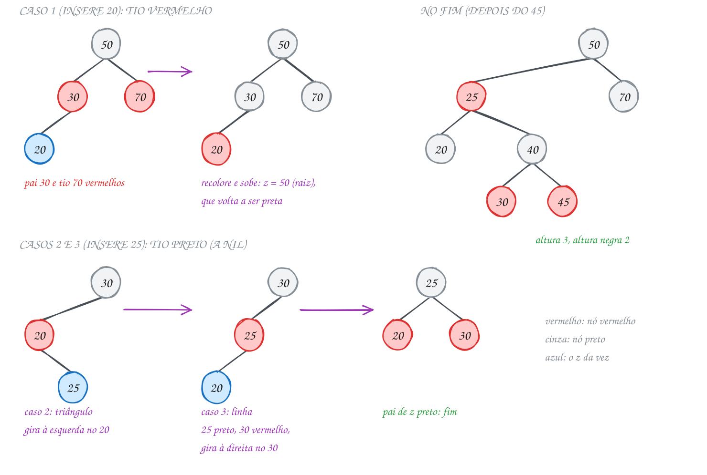
O conserto no vermelhopreto.c (pai filho esquerdo; o outro lado é o
espelho). O T->casos conta cada caso:
static void conserta(ArvVP *T, NoVP *z) {
while (z->pai->cor == VERMELHO) {
NoVP *avo = z->pai->pai;
if (z->pai == avo->esq) {
NoVP *tio = avo->dir;
if (tio->cor == VERMELHO) { // caso 1: tio vermelho, recolore e sobe
z->pai->cor = PRETO;
tio->cor = PRETO;
avo->cor = VERMELHO;
z = avo;
T->casos[1]++;
} else {
if (z == z->pai->dir) { // caso 2: tio preto, z em "triângulo"
z = z->pai;
gira_esquerda(T, z);
T->casos[2]++;
}
z->pai->cor = PRETO; // caso 3: tio preto, z em "linha"
z->pai->pai->cor = VERMELHO;
gira_direita(T, z->pai->pai);
T->casos[3]++;
}
} else {
// o espelho: troque esq por dir e esquerda por direita
}
}
T->raiz->cor = PRETO; // propriedade 2: a raiz é preta
}
O laço nunca testa NULL: o tio pode ser a sentinela, preta, e cai nos casos
2 e 3. O cliente:
#include <stdio.h>
#include "vermelhopreto.h"
int main(void) {
int pacotes[] = {50, 30, 70, 20, 25, 40, 45};
ArvVP *T = vp_cria();
if (T == NULL) {
return 1;
}
for (int i = 0; i < 7; i++) {
int c1 = T->casos[1], c2 = T->casos[2], c3 = T->casos[3];
vp_insere(T, pacotes[i]);
printf("Insere %d: pré", pacotes[i]);
vp_pre_ordem(T);
printf(" | casos 1/2/3: %d %d %d\n", T->casos[1] - c1, T->casos[2] - c2, T->casos[3] - c3);
}
printf("Altura %d, altura negra %d, propriedades: %s\n", vp_altura(T),
vp_altura_negra(T), vp_confere(T) ? "ok" : "quebradas");
vp_libera(T);
return 0;
}
// Saída:
// Insere 50: pré 50 | casos 1/2/3: 0 0 0
// Insere 30: pré 50 30* | casos 1/2/3: 0 0 0
// Insere 70: pré 50 30* 70* | casos 1/2/3: 0 0 0
// Insere 20: pré 50 30 20* 70 | casos 1/2/3: 1 0 0
// Insere 25: pré 50 25 20* 30* 70 | casos 1/2/3: 0 1 1
// Insere 40: pré 50 25* 20 30 40* 70 | casos 1/2/3: 1 0 0
// Insere 45: pré 50 25* 20 40 30* 45* 70 | casos 1/2/3: 0 0 1
// Altura 3, altura negra 2, propriedades: ok
O fluxograma é o conserto do pacote 25: tio preto (a sentinela), z em
triângulo. Caso 2 e caso 3 na mesma volta, e o laço termina:
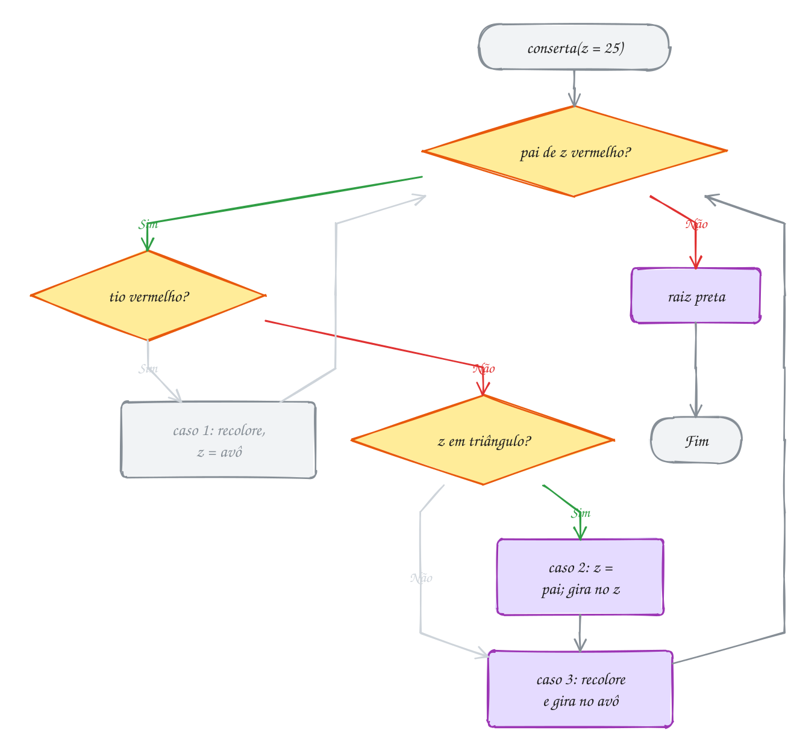
O conserto de três inserções. "Pai" e "avô" são os de z no início da linha:
| Inserção | z | Pai | Tio | Caso | O que acontece | Depois |
|---|---|---|---|---|---|---|
| 20 | 20 | 30 vermelho | 70 vermelho | 1 | 30 e 70 pretos, 50 vermelho; z = 50 |
50 é a raiz: o laço para e ela volta a preto |
| 25 | 25 | 20 vermelho | nil (preto) | 2 | triângulo: z = 20, gira à esquerda no 20 |
o 25 fica entre o 30 e o 20 |
| 25 | 20 | 25 vermelho | nil (preto) | 3 | 25 preto, 30 vermelho, gira à direita no 30 | 25 com 20* e 30*; o pai de z é preto, fim |
| 40 | 40 | 30 vermelho | 20 vermelho | 1 | 30 e 20 pretos, 25 vermelho; z = 25 |
o pai do 25 é o 50, preto: fim |
| 45 | 45 | 40 vermelho | nil (preto) | 3 (espelho) | 40 preto, 30 vermelho, gira à esquerda no 30 | 40 com 30* e 45* |
Duas rotações no 25, uma no 45, nenhuma no 20 e no 40. A altura negra só cresce quando o caso 1 chega à raiz: a árvore cresce por cima.
Exemplo A353 · A altura que a rubro-negra garante
#include <math.h>
#include <stdio.h>
#include "0177-vermelhopreto.h"
void testa(const char *nome, int n, int passo) {
ArvVP *T = vp_cria();
if (T == NULL) {
return;
}
for (int i = 0; i < n; i++) {
vp_insere(T, (int)((long)i * passo % n)); // passo 1: crescente
}
int bh = vp_altura_negra(T);
printf("%-12s n = %d | altura %2d | altura negra %2d | 2^bh - 1 = %4d <= n? %s | regras: %s\n",
nome, n, vp_altura(T), bh, (1 << bh) - 1, (1 << bh) - 1 <= n ? "sim" : "não",
vp_confere(T) ? "ok" : "quebradas");
vp_libera(T);
}
int main(void) {
testa("crescente:", 1000, 1);
testa("embaralhada:", 1000, 7919);
testa("crescente:", 4095, 1);
printf("Limite 2 log2(n + 1): %.1f para n = 1000 e %.1f para n = 4095\n",
2 * log2(1001.0), 2 * log2(4096.0));
return 0;
}
// Saída:
// crescente: n = 1000 | altura 16 | altura negra 9 | 2^bh - 1 = 511 <= n? sim | regras: ok
// embaralhada: n = 1000 | altura 11 | altura negra 6 | 2^bh - 1 = 63 <= n? sim | regras: ok
// crescente: n = 4095 | altura 21 | altura negra 11 | 2^bh - 1 = 2047 <= n? sim | regras: ok
// Limite 2 log2(n + 1): 19.9 para n = 1000 e 24.0 para n = 4095
gcc ~/LPEDC/material/A353.c ~/LPEDC/material/0177-vermelhopreto.c -o ~/LPEDC/material/A353 -lm && ~/LPEDC/material/A353
Exemplo A354 · Quantas vezes cada caso aparece
#include <stdio.h>
#include "0177-vermelhopreto.h"
int main(void) {
int n = 10000;
ArvVP *T = vp_cria();
if (T == NULL) {
return 1;
}
int max_rot = 0, max_caso1 = 0;
for (int i = 0; i < n; i++) {
int rot = T->rotacoes, c1 = T->casos[1];
vp_insere(T, (int)((long)i * 7919 % n));
if (T->rotacoes - rot > max_rot) {
max_rot = T->rotacoes - rot;
}
if (T->casos[1] - c1 > max_caso1) {
max_caso1 = T->casos[1] - c1;
}
}
printf("%d inserções embaralhadas\n", n);
printf("caso 1 (tio vermelho, recolore): %d vezes\n", T->casos[1]);
printf("caso 2 (tio preto, triângulo): %d vezes\n", T->casos[2]);
printf("caso 3 (tio preto, linha): %d vezes\n", T->casos[3]);
printf("rotações: %d no total, no máximo %d numa inserção\n", T->rotacoes, max_rot);
printf("recolorações (caso 1) seguidas numa inserção: no máximo %d\n", max_caso1);
printf("altura %d, altura negra %d\n", vp_altura(T), vp_altura_negra(T));
vp_libera(T);
return 0;
}
// Saída:
// 10000 inserções embaralhadas
// caso 1 (tio vermelho, recolore): 4401 vezes
// caso 2 (tio preto, triângulo): 8 vezes
// caso 3 (tio preto, linha): 3347 vezes
// rotações: 3355 no total, no máximo 2 numa inserção
// recolorações (caso 1) seguidas numa inserção: no máximo 7
// altura 15, altura negra 8
gcc ~/LPEDC/material/A354.c ~/LPEDC/material/0177-vermelhopreto.c -o ~/LPEDC/material/A354 && ~/LPEDC/material/A354
Exercício E1057 · ★☆☆
Insira os pacotes 1 a 10, em ordem, numa rubro-negra (vermelhopreto.h) e escreva conta_vermelhos(T, x), que percorre a subárvore de x e conta os nós vermelhos. A recursão para na sentinela (x == &T->nil), e não em NULL. Mostre a pré-ordem, os vermelhos, os pretos e a altura negra.
Saída esperada:
pré: 4 2 1 3 6 5 8* 7 9 10*
vermelhos: 2 | pretos: 8 | altura negra: 3
gcc ~/LPEDC/material/E1057.c ~/LPEDC/material/0177-vermelhopreto.c -o ~/LPEDC/material/E1057 && ~/LPEDC/material/E1057
Exercício E1059 · ★★☆
O Cormen prova que a subárvore de qualquer nó x tem pelo menos 2^bh(x) - 1 nós, onde bh(x) é a altura negra de x: quantos pretos há de x (sem contar x) até uma folha nil (contando a nil). Confira isso nó por nó. Insira 40, 20, 60, 10, 30, 50, 70, 5, 15, 25 (vermelhopreto.h) e escreva bh(T, x), nos(T, x) e tabela(T, x), que mostra em ordem, para cada nó: chave, cor, bh, nós da subárvore, 2^bh - 1 e "ok" se a desigualdade vale.
Saída esperada:
5 vermelho bh 1 | nós 1 | 2^bh - 1 = 1 ok
10 preto bh 1 | nós 3 | 2^bh - 1 = 1 ok
15 vermelho bh 1 | nós 1 | 2^bh - 1 = 1 ok
20 vermelho bh 2 | nós 6 | 2^bh - 1 = 3 ok
25 vermelho bh 1 | nós 1 | 2^bh - 1 = 1 ok
30 preto bh 1 | nós 2 | 2^bh - 1 = 1 ok
40 preto bh 2 | nós 10 | 2^bh - 1 = 3 ok
50 vermelho bh 1 | nós 1 | 2^bh - 1 = 1 ok
60 preto bh 1 | nós 3 | 2^bh - 1 = 1 ok
70 vermelho bh 1 | nós 1 | 2^bh - 1 = 1 ok
gcc ~/LPEDC/material/E1059.c ~/LPEDC/material/0177-vermelhopreto.c -o ~/LPEDC/material/E1059 && ~/LPEDC/material/E1059
Exercício E1060 · ★★☆
Acompanhe o conserto da rubro-negra. Insira as senhas 10, 20, 30, 15, 25, 5, 1 e 27 (vermelhopreto.h) e, depois de cada uma, mostre quantas vezes cada caso do conserto rodou NAQUELA inserção (use T->casos[1], [2] e [3] antes e depois) e a pré-ordem. No fim, mostre o total de rotações.
Saída esperada:
insere 10: caso 1: 0 | caso 2: 0 | caso 3: 0 | pré 10
insere 20: caso 1: 0 | caso 2: 0 | caso 3: 0 | pré 10 20*
insere 30: caso 1: 0 | caso 2: 0 | caso 3: 1 | pré 20 10* 30*
insere 15: caso 1: 1 | caso 2: 0 | caso 3: 0 | pré 20 10 15* 30
insere 25: caso 1: 0 | caso 2: 0 | caso 3: 0 | pré 20 10 15* 30 25*
insere 5: caso 1: 0 | caso 2: 0 | caso 3: 0 | pré 20 10 5* 15* 30 25*
insere 1: caso 1: 1 | caso 2: 0 | caso 3: 0 | pré 20 10* 5 1* 15 30 25*
insere 27: caso 1: 0 | caso 2: 1 | caso 3: 1 | pré 20 10* 5 1* 15 27 25* 30*
rotações no total: 3
gcc ~/LPEDC/material/E1060.c ~/LPEDC/material/0177-vermelhopreto.c -o ~/LPEDC/material/E1060 && ~/LPEDC/material/E1060
Exercício E1061 · ★★★
Escreva a inserção da rubro-negra do Cormen à mão, com a sentinela nil (variável global, preta, que serve de folha e de pai da raiz): gira_esq, gira_dir, conserta (os casos 1, 2 e 3 e o espelho deles), insere(chave) e libera. Escreva também:
void pre(const No *x) // pré-ordem; vermelho leva "*" depois da chave
int fiscal(const No *x) // pretos de x até a nil (nil inclusive), ou
// -1 se a propriedade 4 ou a 5 falhar
Insira os pacotes 1 a 10, em ordem, mostre a pré-ordem e o veredito do fiscal sobre a raiz.
Saída esperada:
pré: 4 2 1 3 6 5 8* 7 9 10*
fiscal: as cinco propriedades valem
gcc ~/LPEDC/material/E1061.c ~/LPEDC/material/0177-vermelhopreto.c -o ~/LPEDC/material/E1061 && ~/LPEDC/material/E1061
A tabela de dispersão do 0105 só é rápida se a função hash espalhar as chaves
pelos baldes. Imagine um atacadão que registra fardos de 16 unidades pelo
número do último item: 16, 32, 48, até 160. Com 16 baldes e k % 16, os dez
fardos caem todos no balde 0, a lista desse balde tem dez nós e a busca volta
a custar O(n). A conta está certa; o que falhou foi a escolha do tamanho da
tabela. Este assunto mostra como escolher bem e apresenta um método que
depende menos dessa escolha.
O método da divisão é o que você já usou: h(k) = k mod m, com m o
número de baldes. É uma conta só e roda rápido, mas o resultado depende muito
do valor de m (CORMEN et al., 2024, cap. 11). Alguns valores são ruins por
um motivo que dá para ver em binário.
Se m = 2^p, o resto da divisão por m é formado só pelos p bits de
baixo de k; em C, k % 16 dá o mesmo que k & 15. O resto dos bits é
ignorado. Os fardos de 16 em 16 têm os 4 bits de baixo sempre zero, e por
isso colidem todos. Com m = 10^d acontece o mesmo em decimal: só os d
últimos dígitos contam, e com m = 100 todo preço terminado em 00 cai no balde
0. E m = 2^p - 1 é ruim para textos tratados como números: trocar duas
letras de lugar não muda o balde (CORMEN et al., 2024, cap. 11).
A regra do Cormen para o método da divisão é escolher um primo longe de uma potência de 2. Se você espera umas 2000 chaves e aceita uns 3 por balde, precisa de uns 667 baldes; 673 é primo e fica longe de 512 e de 1024, então serve (CORMEN et al., 2024, cap. 11).
O método da multiplicação tira o peso da escolha de m. Você multiplica a
chave por uma constante A, com 0 < A < 1, fica só com a parte
fracionária do produto (o que vem depois da vírgula, escrito k·A mod 1) e
multiplica isso por m, descartando as casas decimais:
h(k) = ⌊m · (k·A mod 1)⌋. A parte fracionária de k·A depende de todos os
dígitos de k, não só dos últimos, então m pode ser qualquer valor, até
uma potência de 2 (CORMEN et al., 2024, cap. 11).
Qualquer A entre 0 e 1 funciona, mas alguns espalham melhor. Knuth sugere
A ≈ (√5 − 1) / 2 = 0,6180339887..., o inverso da razão áurea: com ele,
chaves seguidas caem longe umas das outras e cobrem a tabela inteira (KNUTH,
1998). Veja a chave 10 com m = 16: 10 · A = 6,180339..., a parte fracionária é
0,180339..., vezes 16 dá 2,88..., e o balde é 2.
Em double, essa conta é lenta e sujeita a arredondamento. A versão usada na
prática trabalha só com inteiros. Com palavras de 32 bits e m = 2^p, troque
A pela constante inteira s = ⌊A · 2^32⌋ = 2654435769. O produto k · s
tem até 64 bits; os 32 de baixo representam, em binário, a parte fracionária
de k·A. Os p bits mais altos desses 32 são o balde. Em C, um uint32_t
já guarda só os 32 bits de baixo do produto, e um deslocamento à direita de
32 - p posições deixa os p de cima (KNUTH, 1998):
uint32_t k = 10, s = 2654435769u;
uint32_t produto = k * s; // a conta é feita mod 2^32
printf("%u\n", produto >> (32 - 4)); // m = 16 = 2^4: os 4 bits de cima
// 2
O resultado bate com a conta em double: balde 2. Repare que não há divisão
nenhuma: só uma multiplicação e um deslocamento, que o processador faz bem
mais depressa que uma divisão.
[!WARNING] O produto tem que ser
unsigned: comint,k * 2654435769estoura (comportamento indefinido). E pegue os bits de cima (>> (32 - p)), não os de baixo (& (m - 1)), que repetem o problema da divisão por 2^p.
Um atacadão registra fardos de 16 unidades pelo número do último item: 16,
32, 48 até 160. Com k % 16, os dez caem no balde 0. Os fardos passam por
divisão por 16, divisão por 13 e multiplicação com m = 16; no desenho, a conta
do fardo 48:
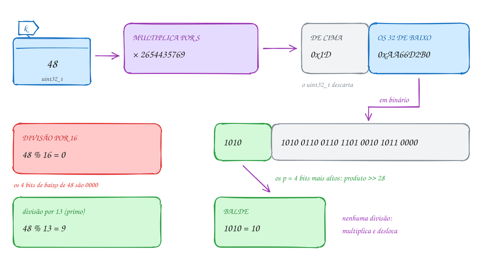
No espalha.c, as duas multiplicações:
int esp_multiplicacao(uint32_t k, int m) {
double produto = k * ESP_A;
double fracao = produto - floor(produto); // k*A mod 1: só a parte depois da vírgula
return (int)(m * fracao);
}
int esp_mult_desloca(uint32_t k, int p) {
uint32_t produto = k * ESP_S; // unsigned: a conta é feita mod 2^32, sem estouro
return (int)(produto >> (32 - p));
}
O programa do atacadão:
#include <stdio.h>
#include "espalha.h"
int main(void) {
int div16[16] = {0}, div13[13] = {0}, mult16[16] = {0};
printf("fardo | k %% 16 | k %% 13 | multiplicação (m = 16)\n");
for (uint32_t k = 16; k <= 160; k += 16) {
int a = esp_divisao(k, 16), b = esp_divisao(k, 13), c = esp_mult_desloca(k, 4);
div16[a]++;
div13[b]++;
mult16[c]++;
printf("%5u | %6d | %6d | %d\n", k, a, b, c);
}
printf("Balde mais cheio: %d | %d | %d\n", esp_maior_balde(div16, 16),
esp_maior_balde(div13, 13), esp_maior_balde(mult16, 16));
return 0;
}
// Saída:
// fardo | k % 16 | k % 13 | multiplicação (m = 16)
// 16 | 0 | 3 | 14
// 32 | 0 | 6 | 12
// 48 | 0 | 9 | 10
// 64 | 0 | 12 | 8
// 80 | 0 | 2 | 7
// 96 | 0 | 5 | 5
// 112 | 0 | 8 | 3
// 128 | 0 | 11 | 1
// 144 | 0 | 1 | 15
// 160 | 0 | 4 | 14
// Balde mais cheio: 10 | 1 | 2
Com 16, os dez num balde só; com 13, nenhuma colisão; com a multiplicação,
uma (16 e 160). O fluxograma confere o p (deslocar 32 bits ou mais é
indefinido), multiplica, deixa o uint32_t cortar e desloca:
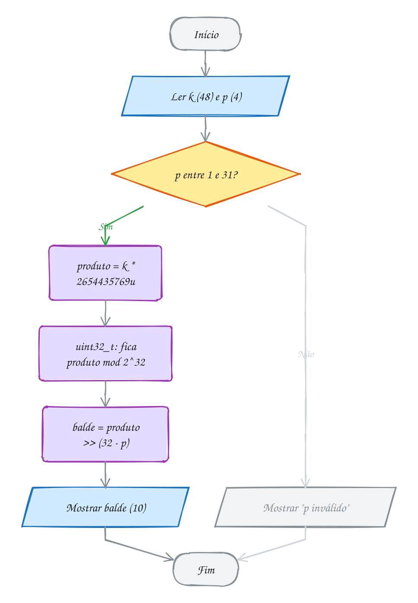
Exemplo A355 · Potência de 2 só enxerga os bits de baixo
#include <stdio.h>
#include "0178-espalha.h"
int main(void) {
// etiquetas do estoque: o lote fica no byte de cima, o item embaixo é 0
uint32_t etiquetas[] = {0x1A00, 0x2B00, 0x3C00, 0x4D00, 0x5E00};
printf("etiqueta | k %% 256 | k & 255 | k %% 251\n");
for (int i = 0; i < 5; i++) {
uint32_t k = etiquetas[i];
printf(" 0x%04X | %7d | %7u | %d\n", (unsigned)k, esp_divisao(k, 256), k & 255u,
esp_divisao(k, 251));
}
// o mesmo vale em base 10: m = 100 só olha os dois últimos dígitos
uint32_t precos[] = {1500, 2300, 4700, 990, 12000}; // em centavos
printf("preço | k %% 100 | k %% 97\n");
for (int i = 0; i < 5; i++) {
printf("%5u | %7d | %d\n", precos[i], esp_divisao(precos[i], 100),
esp_divisao(precos[i], 97));
}
return 0;
}
// Saída:
// etiqueta | k % 256 | k & 255 | k % 251
// 0x1A00 | 0 | 0 | 130
// 0x2B00 | 0 | 0 | 215
// 0x3C00 | 0 | 0 | 49
// 0x4D00 | 0 | 0 | 134
// 0x5E00 | 0 | 0 | 219
// preço | k % 100 | k % 97
// 1500 | 0 | 45
// 2300 | 0 | 69
// 4700 | 0 | 44
// 990 | 90 | 20
// 12000 | 0 | 69
gcc ~/LPEDC/material/A355.c ~/LPEDC/material/0178-espalha.c -o ~/LPEDC/material/A355 -lm && ~/LPEDC/material/A355
Exemplo A356 · Multiplicação com double e com deslocamento
#include <math.h>
#include <stdio.h>
#include "0178-espalha.h"
// a fórmula floor(m * (k*A mod 1)) com qualquer A
int mult_com_A(uint32_t k, int m, double A) {
double produto = k * A;
return (int)(m * (produto - floor(produto)));
}
int main(void) {
// 1. as duas versões dão o mesmo balde? m = 1024 = 2^10
double a_exato = ESP_S / 4294967296.0; // s / 2^32: o A que os inteiros usam
int dif_knuth = 0, dif_exato = 0;
for (uint32_t k = 0; k < 100000; k++) {
int inteiro = esp_mult_desloca(k, 10);
dif_knuth += esp_multiplicacao(k, 1024) != inteiro;
dif_exato += mult_com_A(k, 1024, a_exato) != inteiro;
}
printf("k de 0 a 99999, m = 1024, comparado com o deslocamento:\n");
printf(" double com A = 0.6180339887...: %d baldes diferentes\n", dif_knuth);
printf(" double com A = s / 2^32: %d baldes diferentes\n", dif_exato);
// 2. a versão com double aceita qualquer m; a de inteiros, só 2^p
printf("m = 1000 (não é potência de 2): k = 123456 -> %d\n", esp_multiplicacao(123456, 1000));
// 3. chaves seguidas espalham bem? 1000 chaves em m = 64
int div[64] = {0}, mult[64] = {0};
for (uint32_t k = 5000; k < 6000; k++) {
div[esp_divisao(k, 64)]++;
mult[esp_mult_desloca(k, 6)]++;
}
printf("1000 chaves seguidas, m = 64 (ideal: 15.6 por balde)\n");
printf(" divisão: balde mais cheio com %d\n", esp_maior_balde(div, 64));
printf(" multiplicação: balde mais cheio com %d\n", esp_maior_balde(mult, 64));
// 4. mas múltiplos de 64 derrubam a divisão, não a multiplicação
int div2[64] = {0}, mult2[64] = {0};
for (uint32_t i = 1; i <= 1000; i++) {
div2[esp_divisao(64 * i, 64)]++;
mult2[esp_mult_desloca(64 * i, 6)]++;
}
printf("1000 múltiplos de 64, m = 64\n");
printf(" divisão: balde mais cheio com %d\n", esp_maior_balde(div2, 64));
printf(" multiplicação: balde mais cheio com %d\n", esp_maior_balde(mult2, 64));
return 0;
}
// Saída:
// k de 0 a 99999, m = 1024, comparado com o deslocamento:
// double com A = 0.6180339887...: 592 baldes diferentes
// double com A = s / 2^32: 0 baldes diferentes
// m = 1000 (não é potência de 2): k = 123456 -> 4
// 1000 chaves seguidas, m = 64 (ideal: 15.6 por balde)
// divisão: balde mais cheio com 16
// multiplicação: balde mais cheio com 17
// 1000 múltiplos de 64, m = 64
// divisão: balde mais cheio com 1000
// multiplicação: balde mais cheio com 17
gcc ~/LPEDC/material/A356.c ~/LPEDC/material/0178-espalha.c -o ~/LPEDC/material/A356 -lm && ~/LPEDC/material/A356
Exercício E1063 · ★☆☆
A transportadora espalha os CEPs de entrega numa tabela de m = 97 baldes (97 é primo e fica longe de 64 e de 128). Use esp_divisao (espalha.h) para mostrar o balde de cada CEP: 69050000, 69020120, 69099999, 01310100, 20040002 e 69050097. Mostre o CEP com 8 dígitos (zeros à esquerda).
Saída esperada:
CEP | balde (m = 97)
69050000 | 65
69020120 | 61
69099999 | 12
01310100 | 18
20040002 | 93
69050097 | 65
gcc ~/LPEDC/material/E1063.c ~/LPEDC/material/0178-espalha.c -o ~/LPEDC/material/E1063 -lm && ~/LPEDC/material/E1063
Exercício E1065 · ★★☆
O almoxarifado recebe 1000 caixas numeradas de 64 em 64 (64, 128, ..., 64000). Compare três funções (espalha.h): divisão com m = 64, divisão com m = 61 e multiplicação em inteiros com m = 64 (p = 6). Para cada uma, conte as chaves por balde e mostre quantos baldes foram usados e o tamanho do mais cheio.
Saída esperada:
divisão, m = 64: 1 baldes usados, o mais cheio com 1000
divisão, m = 61: 61 baldes usados, o mais cheio com 17
multiplicação, m = 64: 64 baldes usados, o mais cheio com 17
gcc ~/LPEDC/material/E1065.c ~/LPEDC/material/0178-espalha.c -o ~/LPEDC/material/E1065 -lm && ~/LPEDC/material/E1065
Exercício E1066 · ★★☆
Escolha o m de uma tabela com encadeamento pelo método da divisão. Para n chaves e um fator de carga alvo alfa, o m é o menor primo >= n / alfa (arredondado para cima), mas que fique a pelo menos (n / alfa) / 8 de distância da potência de 2 mais próxima; se ficar perto demais, tente o próximo primo. Escreva eh_primo, primo_a_partir(x), distancia_potencia(m) e escolhe(n, alfa), e teste (2000, 3), (3000, 2), (5000, 5) e (100, 2).
Saída esperada:
n = 2000, alfa = 3: alvo 667 -> m = 673 (a 161 da potência de 2 mais perto)
n = 3000, alfa = 2: alvo 1500 -> m = 1511 (a 487 da potência de 2 mais perto)
n = 5000, alfa = 5: alvo 1000 -> m = 1151 (a 127 da potência de 2 mais perto)
n = 100, alfa = 2: alvo 50 -> m = 53 (a 11 da potência de 2 mais perto)
gcc ~/LPEDC/material/E1066.c ~/LPEDC/material/0178-espalha.c -o ~/LPEDC/material/E1066 -lm && ~/LPEDC/material/E1066
Exercício E1068 · ★★★
O método da multiplicação aceita m = 2^p, e isso permite uma tabela que DOBRA de tamanho. Escreva uma tabela hash com encadeamento (listas) cujo índice é (k * 2654435769u) >> (32 - p), com uint32_t. Ela começa com m = 4 e, antes de inserir, se n + 1 passar de m, dobra: cria 2m baldes vazios e move cada nó para o balde novo (o índice muda, porque p muda), sem malloc novo por item, mostrando "dobrou: m = ... (n = ...)". Insira as matrículas 1000, 2000, ..., 100000 e mostre n, m, o fator de carga e o tamanho da maior lista. Libere tudo no fim.
Saída esperada:
dobrou: m = 8 (n = 4)
dobrou: m = 16 (n = 8)
dobrou: m = 32 (n = 16)
dobrou: m = 64 (n = 32)
dobrou: m = 128 (n = 64)
fim: n = 100, m = 128, fator de carga 0.78, maior lista 2
gcc ~/LPEDC/material/E1068.c ~/LPEDC/material/0178-espalha.c -o ~/LPEDC/material/E1068 -lm && ~/LPEDC/material/E1068
No endereçamento aberto do 0107, a tabela não tem listas: cada posição guarda uma chave ou está livre. Quando a posição calculada já está ocupada, a chave precisa de outro lugar, e você viu a resposta mais simples: tentar a posição seguinte. Ela funciona, mas cria filas de chaves grudadas que deixam a tabela lenta. A pergunta deste assunto é qual "outro lugar" tentar.
Pense num guarda-volumes com 13 armários. O funcionário escolhe o armário
pelo resto do número do cartão por 13; se estiver ocupado, segue uma regra
fixa para escolher o próximo. A lista de armários que ele tenta, em ordem, é
a sequência de sondagem da chave: h(k, 0), h(k, 1), h(k, 2) e assim
por diante, com i contando as tentativas. A inserção percorre essa
sequência e para na primeira posição livre. A busca refaz o mesmo caminho e
para quando acha a chave ou quando encontra uma posição livre, porque a chave
teria sido guardada ali (CORMEN et al., 2024, cap. 11).
A sondagem linear é a do 0107: h(k, i) = (h'(k) + i) mod m, com h'(k)
a posição inicial e m o tamanho da tabela. O defeito dela se chama
agrupamento primário. As posições ocupadas formam blocos contínuos, e
toda chave que cai em qualquer ponto de um bloco anda até o fim dele e o
aumenta em uma posição. Quanto maior o bloco, mais chaves ele atrai, e o
bloco cresce cada vez mais depressa (CORMEN et al., 2024, cap. 11).
A sondagem quadrática espalha os saltos: h(k, i) = (h'(k) + c₁·i + c₂·i²) mod m, com c₁ e c₂ constantes. Com c₁ = 0 e c₂ = 1, a chave
tenta h'(k), depois 1, 4, 9, 16 posições adiante. Uma chave que cai perto
de um bloco pula para longe dele em poucas tentativas, e os blocos se
desfazem. Sobra um defeito menor, o agrupamento secundário: duas chaves
com a mesma posição inicial seguem exatamente a mesma trilha. Com m = 13, os
cartões 31, 44 e 57 começam todos no armário 5 e tentam 5, 6, 9, 1, na mesma
ordem (TENENBAUM; LANGSAM; AUGENSTEIN, 1995). Com m primo, essa trilha
passa só por metade das posições, então a quadrática só garante achar lugar
se a tabela estiver com menos da metade ocupada.
A dispersão dupla (double hashing) resolve o secundário usando uma
segunda função hash para o tamanho do passo: h(k, i) = (h₁(k) + i·h₂(k)) mod m. Duas chaves que começam no mesmo lugar quase sempre têm passos
diferentes e se separam já na segunda tentativa. De todas, é a que mais se
aproxima do hash uniforme ideal (CORMEN et al., 2024, cap. 11). No
guarda-volumes, com h₂(k) = 1 + (k mod 12), o 31 anda de 8 em 8, o 44 de 9
em 9 e o 57 de 10 em 10.
O passo tem duas exigências. Ele nunca pode ser 0, senão a chave tenta a
mesma posição para sempre. E precisa ser primo com m (sem divisor comum
além de 1), para que a sequência passe por todas as posições antes de
repetir. Com m primo, a receita do Cormen é h₁(k) = k mod m e h₂(k) = 1 + (k mod (m - 1)), que vai de 1 a m - 1. Com m = 2^p, basta um h₂ que
sempre dê ímpar (CORMEN et al., 2024, cap. 11).
O custo de todas depende do fator de carga α = n / m, a fração da
tabela que está ocupada. Supondo hash uniforme, uma busca sem sucesso faz
em média no máximo 1 / (1 - α) sondagens, e uma busca com sucesso, no
máximo (1/α) · ln(1 / (1 - α)). Com a tabela pela metade (α = 0,5), isso dá
2 e 1,4; com 90% ocupada (α = 0,9), dá 10 e 2,6 (CORMEN et al., 2024, cap.
11). A linear fica bem acima desses números quando a carga sobe, por causa do
agrupamento primário.
Falta a remoção, que vale para as três. Se você apaga uma chave e marca a posição como livre, quebra a busca de quem passou por ali: uma chave que pulou essa posição para ser guardada mais adiante deixa de ser achada, porque a busca para na posição livre. Por isso a remoção deixa uma lápide (tombstone), uma marca de "removido". A busca passa reto pela lápide; a inserção pode reaproveitá-la (TENENBAUM; LANGSAM; AUGENSTEIN, 1995).
[!WARNING] O passo
h₂(k)não pode ser 0 nem ter fator comum comm: comm = 12e passo 4, a chave visita só 3 posições. Na quadrática com carga acima de 1/2, a inserção pode falhar com posições livres.
Um guarda-volumes de 13 armários usa cartão % 13, e os cartões 18, 31, 44,
20 e 57 entram nas três tabelas; quatro deles começam no armário 5. No
desenho, as posições que a busca do 57 olha:
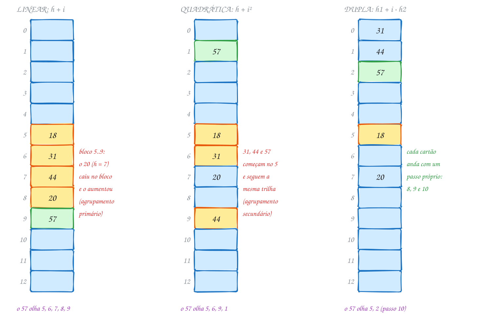
A sequência de sondagem do sondagem.c (modo escolhido na criação):
int sd_posicao(const Sondagem *t, int chave, int i) {
int m = t->m;
int h1 = chave % m;
switch (t->modo) {
case SD_LINEAR:
return (h1 + i) % m;
case SD_QUADRATICA:
return (int)((h1 + (long)i * i) % m);
default: { // dupla: o passo h2 depende da chave e nunca é 0
int h2 = 1 + chave % (m - 1);
return (int)((h1 + (long)i * h2) % m);
}
}
}
Inserção, busca e remoção chamam sd_posicao(t, chave, i). O
guarda-volumes:
#include <stdio.h>
#include "sondagem.h"
int main(void) {
const char *nomes[] = {"linear: ", "quadrática:", "dupla: "};
int cartoes[] = {18, 31, 44, 20, 57};
printf(" ");
for (int j = 0; j < 13; j++) {
printf(" %3d", j);
}
printf("\n");
for (int modo = 0; modo < 3; modo++) {
Sondagem *t = sd_cria(13, (ModoSondagem)modo);
if (t == NULL) {
return 1;
}
int total = 0;
for (int i = 0; i < 5; i++) {
int s;
sd_insere(t, cartoes[i], &s);
total += s;
}
printf("%s", nomes[modo]);
sd_mostra(t);
int s;
sd_busca(t, 57, &s);
printf(" sondagens para guardar: %d | para achar o 57: %d\n", total, s);
sd_libera(t);
}
return 0;
}
// Saída:
// 0 1 2 3 4 5 6 7 8 9 10 11 12
// linear: . . . . . 18 31 44 20 57 . . .
// sondagens para guardar: 13 | para achar o 57: 5
// quadrática: . 57 . . . 18 31 20 . 44 . . .
// sondagens para guardar: 11 | para achar o 57: 4
// dupla: 31 44 57 . . 18 . 20 . . . . .
// sondagens para guardar: 8 | para achar o 57: 2
Na linear, o 20 cai no meio do bloco e vai para o 8. Na quadrática, 31, 44 e
57 repetem a trilha 5, 6, 9, 1. Na dupla, cada um sai do 5 com um passo
diferente. O fluxograma é a inserção do 57 na dupla: (5 + 10) % 13 = 2 está
livre:
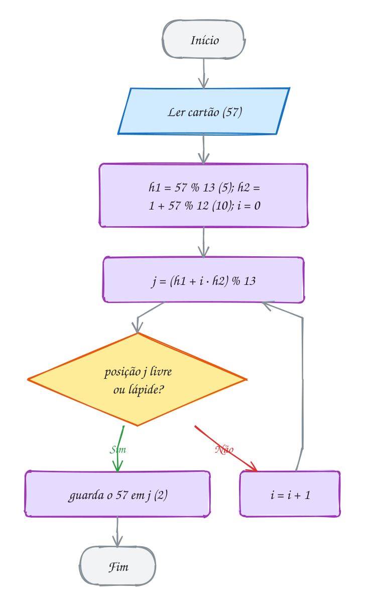
Exemplo A357 · Medindo os agrupamentos
#include <stdio.h>
#include "0179-sondagem.h"
static unsigned semente;
int sorteia(void) { // gerador congruente simples: chaves de 0 a 999999
semente = semente * 1103515245u + 12345u;
return (int)((semente >> 8) % 1000000);
}
int main(void) {
int m = 1009;
double cargas[] = {0.5, 0.7, 0.9};
printf("busca sem sucesso: média de sondagens (m = %d)\n", m);
printf("carga | 1/(1-a) | linear | quadrática | dupla\n");
for (int c = 0; c < 3; c++) {
double media[3];
for (int modo = 0; modo < 3; modo++) {
Sondagem *t = sd_cria(m, (ModoSondagem)modo);
if (t == NULL) {
return 1;
}
semente = 2024; // as mesmas chaves para os três modos
while (sd_carga(t) < cargas[c]) {
sd_insere(t, sorteia(), NULL);
}
long soma = 0;
for (int i = 0; i < 1000; i++) { // chaves >= 1000000: nunca inseridas
int s;
sd_busca(t, 1000000 + i, &s);
soma += s;
}
media[modo] = soma / 1000.0;
sd_libera(t);
}
printf(" %.1f | %7.1f | %6.1f | %10.1f | %5.1f\n", cargas[c], 1 / (1 - cargas[c]),
media[0], media[1], media[2]);
}
return 0;
}
// Saída:
// busca sem sucesso: média de sondagens (m = 1009)
// carga | 1/(1-a) | linear | quadrática | dupla
// 0.5 | 2.0 | 2.7 | 2.1 | 2.0
// 0.7 | 3.3 | 5.8 | 3.6 | 3.3
// 0.9 | 10.0 | 44.9 | 10.6 | 10.4
gcc ~/LPEDC/material/A357.c ~/LPEDC/material/0179-sondagem.c -o ~/LPEDC/material/A357 && ~/LPEDC/material/A357
Exemplo A358 · Lápides que se acumulam
#include <stdio.h>
#include "0179-sondagem.h"
// média de sondagens de 500 buscas por chaves que não estão na tabela
double media_sem_sucesso(const Sondagem *t) {
long soma = 0;
for (int i = 0; i < 500; i++) {
int s;
sd_busca(t, 900000 + i, &s);
soma += s;
}
return soma / 500.0;
}
void relata(const char *quando, const Sondagem *t) {
printf("%-23s chaves %3d | lápides %3d | busca sem sucesso: %5.1f sondagens\n", quando,
sd_tamanho(t), sd_lapides(t), media_sem_sucesso(t));
}
int main(void) {
int m = 211;
Sondagem *t = sd_cria(m, SD_DUPLA);
if (t == NULL) {
return 1;
}
int presentes[100]; // as 100 chaves que estão na tabela agora
for (int i = 0; i < 100; i++) {
presentes[i] = i * 37 + 1;
sd_insere(t, presentes[i], NULL);
}
relata("inicial:", t);
int proxima = 10000; // troca 400 vezes: sai uma chave antiga, entra uma nova
for (int rodada = 1; rodada <= 400; rodada++) {
int k = (rodada * 7) % 100;
sd_remove(t, presentes[k]);
presentes[k] = proxima;
proxima += 13;
sd_insere(t, presentes[k], NULL);
if (rodada == 100 || rodada == 400) {
char rotulo[32];
snprintf(rotulo, sizeof rotulo, "depois de %d trocas:", rodada);
relata(rotulo, t);
}
}
Sondagem *nova = sd_cria(m, SD_DUPLA); // reconstruir: reinsere só as chaves vivas
if (nova == NULL) {
sd_libera(t);
return 1;
}
for (int i = 0; i < 100; i++) {
sd_insere(nova, presentes[i], NULL);
}
sd_libera(t);
relata("depois de reconstruir:", nova);
sd_libera(nova);
return 0;
}
// Saída:
// inicial: chaves 100 | lápides 0 | busca sem sucesso: 2.4 sondagens
// depois de 100 trocas: chaves 100 | lápides 68 | busca sem sucesso: 5.0 sondagens
// depois de 400 trocas: chaves 100 | lápides 111 | busca sem sucesso: 211.0 sondagens
// depois de reconstruir: chaves 100 | lápides 0 | busca sem sucesso: 2.8 sondagens
gcc ~/LPEDC/material/A358.c ~/LPEDC/material/0179-sondagem.c -o ~/LPEDC/material/A358 && ~/LPEDC/material/A358
Exercício E1069 · ★☆☆
Com m = 13 (sondagem.h), mostre as 6 primeiras posições da sequência de sondagem das chaves 44 e 57 nos três modos (SD_LINEAR, SD_QUADRATICA e SD_DUPLA), usando sd_posicao(t, chave, i) para i de 0 a 5. As duas chaves começam na posição 5: veja em qual modo as sequências se separam.
Saída esperada:
chave 44
linear: 5 6 7 8 9 10
quadrática: 5 6 9 1 8 4
dupla: 5 1 10 6 2 11
chave 57
linear: 5 6 7 8 9 10
quadrática: 5 6 9 1 8 4
dupla: 5 2 12 9 6 3
gcc ~/LPEDC/material/E1069.c ~/LPEDC/material/0179-sondagem.c -o ~/LPEDC/material/E1069 && ~/LPEDC/material/E1069
Exercício E1071 · ★★☆
Dispersão dupla com m = 16, uma potência de 2. A regra do Cormen: o passo h2(k) tem que ser ÍMPAR, para ser primo com 16 e visitar todas as posições. Escreva, sem o TAD, h1(k) = k % 16 e h2(k) = 2 * ((k / 16) % 8)
Saída esperada:
3: h2 = 1 -> posição 3, 1 sondagens
19: h2 = 3 -> posição 6, 2 sondagens
35: h2 = 5 -> posição 8, 2 sondagens
51: h2 = 7 -> posição 10, 2 sondagens
67: h2 = 9 -> posição 12, 2 sondagens
83: h2 = 11 -> posição 14, 2 sondagens
tabela: . . . 3 . . 19 . 35 . 51 . 67 . 83 .
gcc ~/LPEDC/material/E1071.c ~/LPEDC/material/0179-sondagem.c -o ~/LPEDC/material/E1071 && ~/LPEDC/material/E1071
Exercício E1072 · ★★☆
A sondagem quadrática h(k, i) = (k % m + i²) % m não visita todas as posições: com m primo, só (m + 1) / 2 delas são diferentes. Com uma tabela de m = 7 (sondagem.h, SD_QUADRATICA), mostre a sequência da chave 0 para i de 0 a 6 e as posições que ela nunca visita. Depois insira 0, 7, 14, 21 e 28 (todas começam no 0), mostrando a posição de cada uma (-1 é falha), a tabela e a carga. A 28 não entra, com três posições livres.
Saída esperada:
sequência da chave 0: 0 1 4 2 2 4 1
nunca visitadas: 3 5 6
insere 0: posição 0
insere 7: posição 1
insere 14: posição 4
insere 21: posição 2
insere 28: posição -1
tabela: 0 7 21 . 14 . .
carga 0.57 e a chave 28 ficou de fora
gcc ~/LPEDC/material/E1072.c ~/LPEDC/material/0179-sondagem.c -o ~/LPEDC/material/E1072 && ~/LPEDC/material/E1072
Exercício E1074 · ★★★
Escreva, sem o TAD, uma tabela de dispersão dupla que cresce: um vetor de int (-1 livre), m primo, h1 = k % m e h2 = 1 + k % (m - 1). Antes de inserir, se (n + 1) / m passar de 0.5, ela cresce para o menor primo >= 2m, reinsere as chaves antigas (com o m novo, as posições mudam) e mostra "cresceu: m = ... -> ... (n = ...)". Comece com m = 7, insira as chaves 7919 * i % 100000, para i de 0 a 39, e no fim mostre n, m, a carga e a média de sondagens para achar cada uma das 40 chaves. Libere o vetor.
Saída esperada:
cresceu: m = 7 -> 17 (n = 3)
cresceu: m = 17 -> 37 (n = 8)
cresceu: m = 37 -> 79 (n = 18)
cresceu: m = 79 -> 163 (n = 39)
fim: n = 40, m = 163, carga 0.25, média de sondagens 1.38
gcc ~/LPEDC/material/E1074.c ~/LPEDC/material/0179-sondagem.c -o ~/LPEDC/material/E1074 && ~/LPEDC/material/E1074
Uma ordenação que só compara pares de elementos faz da ordem de n log n comparações no pior caso (módulo 17). O módulo 18 mostrou que, quando a chave é um inteiro num intervalo curto, como uma nota de 0 a 10, dá para ordenar sem comparar ninguém com ninguém. Aqui entra mais um método desse tipo, e com ele uma pergunta que aparece em todo sistema real: como ordenar por mais de um critério, "pela nota e, quem empatar, pelo nome"?
Imagine o pombal de um correio antigo: uma parede de escaninhos numerados,
um para cada rua. O carteiro pega cada carta e a põe no escaninho da rua dela,
sem comparar uma carta com outra. Depois esvazia os escaninhos da esquerda
para a direita, e as cartas saem agrupadas por rua. Esse é o pigeonhole
sort (ordenação por casas de pombo): para chaves inteiras num intervalo
[min, max], ele cria uma casa para cada valor possível, r = max - min + 1 casas ao todo.
O método tem duas passadas. Na primeira, cada registro entra no fim da
fila da casa da sua chave, a casa de índice chave - min. Na segunda, você
percorre as casas em ordem e tira os registros de cada fila, na ordem em que
entraram. A primeira passada custa O(n) e a segunda passa pelas r casas e
pelos n registros, então o total é O(n + r). Se r for pequeno perto de
n, o custo é linear. Com notas de 0 a 10, r é 11, qualquer que seja o
tamanho da turma.
O pigeonhole é primo do counting sort do 0120. O counting só conta quantas chaves há de cada valor e calcula a posição final de cada uma; ele nem precisa guardar os registros em casas. O pigeonhole guarda os registros, e cada casa é uma fila. É essa fila que dá ao pigeonhole a propriedade da segunda metade do assunto.
Uma ordenação é estável quando registros com chaves iguais saem na mesma ordem relativa em que entraram (ZIVIANI, 2010). Se Ana e Elisa tiraram 7 e Ana vinha antes na lista, numa ordenação estável Ana continua antes. O pigeonhole é estável porque cada casa é uma fila: quem entra primeiro sai primeiro. A tabela mostra os métodos clássicos:
| Estáveis | Não estáveis |
|---|---|
| bubble, inserção, merge sort, counting, radix (LSD), bucket (com filas), pigeonhole | seleção, shell sort, quick sort, heapsort |
Dois da coluna da esquerda dependem de um detalhe de código. O merge sort é estável se, no empate, pegar primeiro o elemento da metade esquerda. A inserção é estável se deslocar só quem é estritamente maior que o elemento sendo inserido. Os da coluna da direita perdem a estabilidade porque trocam elementos distantes: a seleção, por exemplo, troca o menor com o primeiro da parte não ordenada e pode jogar um registro para depois de outro de chave igual (ZIVIANI, 2010).
A chave composta junta vários campos em ordem de prioridade, como "nota
e, no empate, nome". O primeiro jeito de ordenar por ela é um comparador
composto: uma função que compara o campo principal e, só quando ele empata,
compara o secundário. É o jeito de usar o qsort da biblioteca padrão, que
recebe o comparador por ponteiro para função e não garante estabilidade; o
desempate tem de estar escrito no comparador (CPPREFERENCE, s.d.).
O segundo jeito usa várias passadas de um método estável, da chave menos importante para a mais importante. Para "nota e, no empate, nome", ordene primeiro pelo nome e depois, com um método estável, pela nota. A última passada decide a ordem principal; como ela é estável, quem empata na nota mantém a ordem que a passada anterior deixou, e essa ordem é a do nome. É o mesmo raciocínio do radix LSD, que ordena dígito a dígito começando pelo menos significativo (CORMEN et al., 2024).
O pigeonhole tem um limite: a memória cresce com r, não com n. Ordenar
por CPF, que tem 11 dígitos, pediria 100 bilhões de casas para poucos
registros. Para chaves grandes, o caminho é o radix do 0121, que quebra a
chave em dígitos e usa poucas casas por passada.
[!WARNING] Nas passadas em sequência, a ordem é da menos importante para a mais importante: para "por cidade e, dentro dela, por nota", ordene pela nota e por último pela cidade. E a última passada tem que ser estável.
Uma professora ordena a turma pela nota do simulado (0 a 10), e quem empata fica na ordem da chamada. A chamada já está em ordem de nome, então uma passada estável pela nota entrega a chave composta (nota, nome):
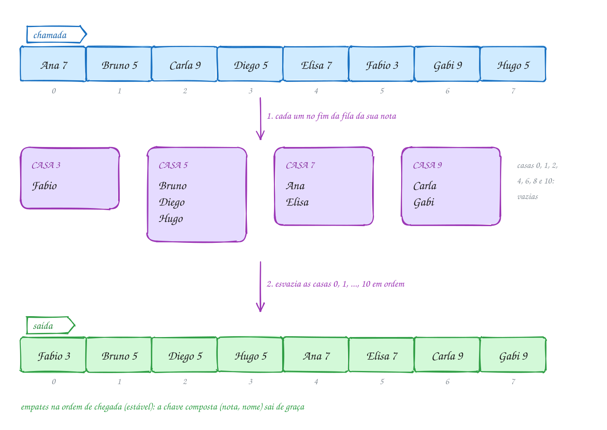
No pombal.c, a casa é uma fila de índices em três vetores (primeiro,
ultimo e prox), sem malloc por aluno. As duas passadas:
for (int i = 0; i < n; i++) { // 1. cada aluno entra no fim da fila da sua casa
int c = v[i].nota - min;
prox[i] = -1;
if (primeiro[c] == -1) {
primeiro[c] = i;
} else {
prox[ultimo[c]] = i;
}
ultimo[c] = i;
}
int k = 0;
for (int c = 0; c < casas; c++) { // 2. esvazia as casas em ordem
for (int i = primeiro[c]; i != -1; i = prox[i]) {
saida[k++] = v[i];
}
}
O programa compara com a seleção:
#include <stdio.h>
#include "pombal.h"
int main(void) {
Aluno chamada[] = { // em ordem alfabética, como na lista de chamada
{"Ana", 7, 1}, {"Bruno", 5, 2}, {"Carla", 9, 1}, {"Diego", 5, 1},
{"Elisa", 7, 2}, {"Fabio", 3, 2}, {"Gabi", 9, 2}, {"Hugo", 5, 1},
};
int n = 8;
Aluno a[8], b[8];
for (int i = 0; i < n; i++) {
a[i] = chamada[i];
b[i] = chamada[i];
}
if (pb_pigeonhole(a, n, 0, 10) != 0) { // notas de 0 a 10: 11 casas
return 1;
}
printf("Pigeonhole: ");
pb_mostra(a, n);
pb_selecao(b, n);
printf("Seleção: ");
pb_mostra(b, n);
return 0;
}
// Saída:
// Pigeonhole: Fabio(3) Bruno(5) Diego(5) Hugo(5) Ana(7) Elisa(7) Carla(9) Gabi(9)
// Seleção: Fabio(3) Bruno(5) Diego(5) Hugo(5) Elisa(7) Ana(7) Gabi(9) Carla(9)
Na seleção, a Elisa passou na frente da Ana: na primeira volta, o Fabio trocou com a Ana, que foi parar depois da Elisa. O fluxograma tem as duas passadas, sem comparação entre alunos:
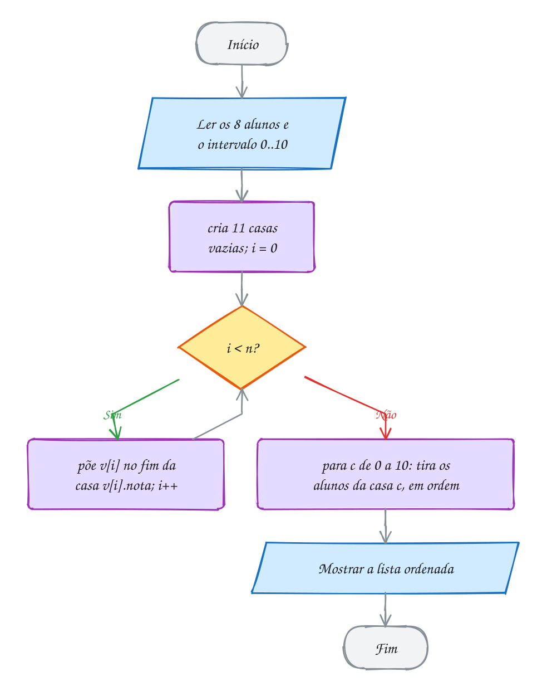
Exemplo A359 · A tabela do campeonato com qsort
#include <stdio.h>
#include <stdlib.h>
#include <string.h>
typedef struct {
char nome[16];
int pontos, vitorias, saldo, gols_pro;
} Time;
// chave composta: pontos, vitórias, saldo e gols pró (do maior para o
// menor) e, se empatar em tudo, o nome em ordem alfabética
int compara(const void *a, const void *b) {
const Time *x = a;
const Time *y = b;
if (x->pontos != y->pontos) {
return y->pontos - x->pontos; // maior primeiro: y - x
}
if (x->vitorias != y->vitorias) {
return y->vitorias - x->vitorias;
}
if (x->saldo != y->saldo) {
return y->saldo - x->saldo;
}
if (x->gols_pro != y->gols_pro) {
return y->gols_pro - x->gols_pro;
}
return strcmp(x->nome, y->nome); // o desempate final deixa a ordem total
}
int main(void) {
Time t[] = {
{"Ipiranga", 20, 6, 8, 19}, {"Aleixo", 23, 7, 10, 22}, {"Coroado", 20, 6, 8, 21},
{"Flores", 20, 5, 12, 25}, {"Japiim", 23, 7, 10, 22}, {"Educandos", 17, 5, 1, 15},
};
int n = 6;
qsort(t, (size_t)n, sizeof(Time), compara);
printf(" %-10s %3s %3s %4s %3s\n", "time", "P", "V", "SG", "GP");
for (int i = 0; i < n; i++) {
printf("%d. %-10s %3d %3d %4d %3d\n", i + 1, t[i].nome, t[i].pontos, t[i].vitorias,
t[i].saldo, t[i].gols_pro);
}
return 0;
}
// Saída:
// time P V SG GP
// 1. Aleixo 23 7 10 22
// 2. Japiim 23 7 10 22
// 3. Coroado 20 6 8 21
// 4. Ipiranga 20 6 8 19
// 5. Flores 20 5 12 25
// 6. Educandos 17 5 1 15
gcc ~/LPEDC/material/A359.c ~/LPEDC/material/0180-pombal.c -o ~/LPEDC/material/A359 && ~/LPEDC/material/A359
Exemplo A360 · Duas passadas estáveis viram uma chave composta
#include <stdio.h>
#include "0180-pombal.h"
// inserção pela turma (estável), para a segunda passada
void insercao_por_turma(Aluno *v, int n) {
for (int i = 1; i < n; i++) {
Aluno x = v[i];
int j = i - 1;
while (j >= 0 && v[j].turma > x.turma) {
v[j + 1] = v[j];
j--;
}
v[j + 1] = x;
}
}
// seleção pela turma (não estável), para comparar
void selecao_por_turma(Aluno *v, int n) {
for (int i = 0; i < n - 1; i++) {
int m = i;
for (int j = i + 1; j < n; j++) {
if (v[j].turma < v[m].turma) {
m = j;
}
}
Aluno t = v[i];
v[i] = v[m];
v[m] = t;
}
}
void mostra(const Aluno *v, int n) {
for (int i = 0; i < n; i++) {
printf(" %d:%s(%d)", v[i].turma, v[i].nome, v[i].nota);
}
printf("\n");
}
int main(void) {
Aluno chamada[] = {
{"Ana", 7, 1}, {"Bruno", 5, 2}, {"Carla", 9, 1}, {"Diego", 5, 1},
{"Elisa", 7, 2}, {"Fabio", 3, 2}, {"Gabi", 9, 2}, {"Hugo", 5, 1},
};
int n = 8;
Aluno a[8], b[8];
for (int i = 0; i < n; i++) {
a[i] = chamada[i];
}
// objetivo: por turma e, dentro da turma, por nota
if (pb_pigeonhole(a, n, 0, 10) != 0) { // 1ª passada: a chave secundária
return 1;
}
for (int i = 0; i < n; i++) {
b[i] = a[i];
}
printf("1ª passada (nota): ");
mostra(a, n);
insercao_por_turma(a, n); // 2ª passada: a principal, com método estável
printf("2ª estável (turma):");
mostra(a, n);
selecao_por_turma(b, n); // a mesma 2ª passada com a seleção
printf("2ª com seleção: ");
mostra(b, n);
return 0;
}
// Saída:
// 1ª passada (nota): 2:Fabio(3) 2:Bruno(5) 1:Diego(5) 1:Hugo(5) 1:Ana(7) 2:Elisa(7) 1:Carla(9) 2:Gabi(9)
// 2ª estável (turma): 1:Diego(5) 1:Hugo(5) 1:Ana(7) 1:Carla(9) 2:Fabio(3) 2:Bruno(5) 2:Elisa(7) 2:Gabi(9)
// 2ª com seleção: 1:Diego(5) 1:Hugo(5) 1:Ana(7) 1:Carla(9) 2:Fabio(3) 2:Elisa(7) 2:Bruno(5) 2:Gabi(9)
gcc ~/LPEDC/material/A360.c ~/LPEDC/material/0180-pombal.c -o ~/LPEDC/material/A360 && ~/LPEDC/material/A360
Exercício E1075 · ★☆☆
A academia quer as idades dos alunos da turma de iniciantes em ordem. As idades vão de 18 a 25: 22, 19, 25, 18, 22, 20, 19, 24, 22, 18. Escreva o pigeonhole sort para números inteiros: um vetor casa[] com uma posição para cada idade possível (25 - 18 + 1 = 8), conte quantos caem em cada casa e depois esvazie as casas em ordem de volta no vetor. Mostre também quantas casas foram usadas.
Saída esperada:
ordenadas: 18 18 19 19 20 22 22 22 24 25
casas usadas: 6 de 8
gcc ~/LPEDC/material/E1075.c ~/LPEDC/material/0180-pombal.c -o ~/LPEDC/material/E1075 && ~/LPEDC/material/E1075
Exercício E1077 · ★★☆
Teste a estabilidade de três ordenações do pombal.h. Monte 10 alunos com nomes a0 a a9, as notas 4, 8, 4, 2, 8, 4, 6, 2, 8, 6 e, no campo turma, a posição original (0 a 9). Escreva eh_estavel(v, n): depois de ordenar, entre vizinhos de nota igual, a posição original tem que crescer. Ordene uma cópia com pb_selecao, outra com pb_insercao e outra com pb_pigeonhole e mostre o veredito e o resultado de cada uma.
Saída esperada:
seleção: não estável | a3(2) a7(2) a2(4) a0(4) a5(4) a6(6) a9(6) a1(8) a8(8) a4(8)
inserção: estável | a3(2) a7(2) a0(4) a2(4) a5(4) a6(6) a9(6) a1(8) a4(8) a8(8)
pigeonhole: estável | a3(2) a7(2) a0(4) a2(4) a5(4) a6(6) a9(6) a1(8) a4(8) a8(8)
gcc ~/LPEDC/material/E1077.c ~/LPEDC/material/0180-pombal.c -o ~/LPEDC/material/E1077 && ~/LPEDC/material/E1077
Exercício E1078 · ★★☆
A previsão do frio na serra: ordene as leituras da MAIS QUENTE para a MAIS FRIA com um pigeonhole sort estável escrito por você. As temperaturas vão de -5 a 8 graus (14 casas; a casa de t é t - (-5)). Cada casa é uma fila de índices, como no pombal.c, e as casas são esvaziadas da mais quente para a mais fria. Leituras: Urubici -3, Gramado 4, Curitiba 8, Sao Joaquim -5, Lages 4, Bom Jardim -3, Canela 4, Caxias 6.
Saída esperada:
8 Curitiba
6 Caxias
4 Gramado
4 Lages
4 Canela
-3 Urubici
-3 Bom Jardim
-5 Sao Joaquim
gcc ~/LPEDC/material/E1078.c ~/LPEDC/material/0180-pombal.c -o ~/LPEDC/material/E1078 && ~/LPEDC/material/E1078
Exercício E1079 · ★★★
A secretaria quer a lista dos inscritos do vestibular por CIDADE (código 1, 2 ou 3) e, dentro de cada cidade, por NOTA, da menor para a maior. Escreva ordena_por_cidade e ordena_por_nota, duas inserções (que são estáveis) sobre Inscrito, e chame-as na ordem que dá o resultado certo (a chave principal fica por último). Inscritos (nome, cidade, nota): Ana 1 62, Teo 2 70, Nina 3 91, Rui 1 80, Bia 2 48, Lia 1 62, Caio 3 55, Ivo 2 70, Joao 1 55. Mostre uma linha por cidade.
Saída esperada:
1:Joao(55) 1:Ana(62) 1:Lia(62) 1:Rui(80)
2:Bia(48) 2:Teo(70) 2:Ivo(70)
3:Caio(55) 3:Nina(91)
gcc ~/LPEDC/material/E1079.c ~/LPEDC/material/0180-pombal.c -o ~/LPEDC/material/E1079 && ~/LPEDC/material/E1079
Um sistema de verdade raramente cabe numa estrutura só. A recepção de um posto de saúde responde a três perguntas o dia inteiro: "esse CPF já tem cadastro?", "qual a próxima consulta depois das 8h45?" e "a paciente desmarcou; quem estava esperando?". Cada pergunta tem uma estrutura do módulo que a responde bem, e o trabalho deste assunto é fazer as três funcionarem juntas sem que uma desarrume a outra.
A primeira pergunta é uma busca exata: dado um CPF, ache o paciente. Não
interessa a ordem dos CPFs, só achar rápido. Isso pede uma tabela hash,
aqui com a dispersão dupla do 0179, que dá busca em O(1) em média. O
tamanho escolhido é m = 101, um primo, como a dispersão dupla pede, e a
tabela fica com menos da metade ocupada, o que mantém as sondagens poucas
(CORMEN et al., 2024, cap. 11).
A segunda pergunta é de ordem: "a próxima depois de tal hora". Uma hash não responde isso, porque ela espalha as chaves de propósito. Os horários vão então para uma rubro-negra clássica com sentinela, a do 0177, com a hora escrita como número no formato HHMM (8h45 vira 845). Marcar um horário custa O(log n). Para achar a próxima consulta, você usa o teto da hora pedida, o menor horário maior ou igual a ela. Se esse horário estiver vago, você segue pelo sucessor do 0175 até achar um ocupado (CORMEN et al., 2024, cap. 13).
A terceira pergunta é de chegada: quem pediu primeiro tem a vez. A fila de espera é a lista dupla circular com sentinela do 0174. O paciente entra no fim; sai do começo quando um horário vaga, ou do meio se desistir. Graças à sentinela, nenhuma dessas saídas tem caso especial (CORMEN et al., 2024, cap. 10).
O ponto delicado é a ligação entre as três. Elas conversam por chaves, não por ponteiros: o nó da árvore guarda o CPF de quem marcou, o paciente na hash guarda o horário dele, e a fila guarda CPFs. Isso importa porque as estruturas mexem nos próprios nós. Uma rotação na rubro-negra muda quem é filho de quem, e uma sondagem pode pôr o paciente numa posição diferente da inicial. Se uma estrutura guardasse um ponteiro para dentro da outra, essas mudanças poderiam deixá-lo apontando para o lugar errado. Com chaves, cada estrutura faz o que quiser por dentro, e a outra continua achando o dado pela chave.
Falta decidir o que acontece com um horário desmarcado sem ninguém na espera.
A rubro-negra do 0177 não implementou a remoção, então o nó continua na
árvore com cpf = 0, marcando o horário vago. É a mesma ideia da lápide
da hash: a posição existe, mas não guarda ninguém.
Por fim, o cliente não precisa saber de nada disso. O agenda.h só declara
typedef struct Agenda Agenda, sem mostrar os campos. Isso é um tipo
opaco: o programa da recepção usa a agenda só pelas funções do .h, e você
pode trocar a rubro-negra por uma AVL sem mudar uma linha dele (CELES;
CERQUEIRA; RANGEL, 2016).
[!WARNING] Quando duas estruturas guardam a mesma informação, elas mudam juntas. Se o cancelamento zerar só a árvore (
x->cpf) e esquecer a hash (p->horario), a paciente nunca mais consegue marcar.
A recepção de um posto de saúde cadastra cinco pacientes. Carla marca às 8h00, Ana às 9h00, Bruno às 10h30; Diego e Elisa esperam pelas 9h00. Ana desmarca e Diego assume. As estruturas depois disso:
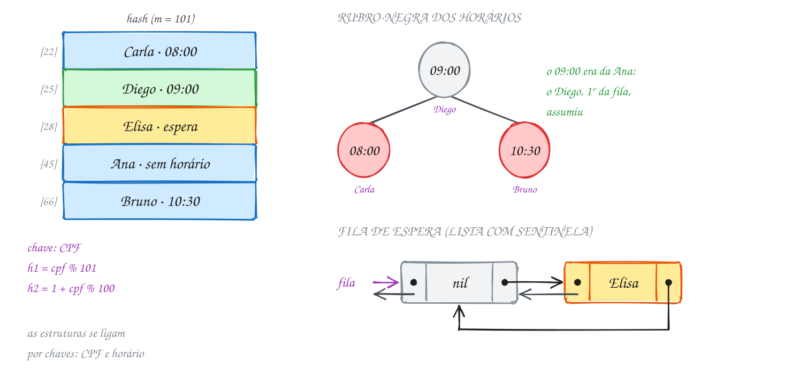
O agenda.c reúne as três implementações (com static). A operação que as
junta é o cancelamento:
int ag_cancela(Agenda *a, int horario) {
NoAg *x = busca_no(a, horario); // rubro-negra: O(log n)
if (x == &a->nil || x->cpf == 0) {
return -1;
}
paciente(a, x->cpf)->horario = -1; // hash: O(1) em média
x->cpf = 0;
a->consultas--;
if (a->na_fila == 0) {
return 0; // ninguém esperando: o horário fica vago na árvore
}
int cpf = a->fila.prox->cpf; // fila: o primeiro, sem if de lista vazia
ag_marca(a, horario, cpf); // ag_marca já tira ele da fila
return cpf;
}
O programa da recepção:
#include <stdio.h>
#include "agenda.h"
int main(void) {
Agenda *a = ag_cria();
if (a == NULL) {
return 1;
}
ag_cadastra(a, 123456789, "Ana");
ag_cadastra(a, 987654321, "Bruno");
ag_cadastra(a, 111222333, "Carla");
ag_cadastra(a, 444555666, "Diego");
ag_cadastra(a, 777888999, "Elisa");
ag_marca(a, 900, 123456789);
ag_marca(a, 1030, 987654321);
ag_marca(a, 800, 111222333);
if (!ag_marca(a, 900, 444555666)) {
printf("09:00 já está ocupado: Diego vai para a espera\n");
ag_espera(a, 444555666);
}
ag_espera(a, 777888999);
ag_mostra(a);
ag_mostra_espera(a);
int quem = ag_cancela(a, 900); // a Ana desmarcou
printf("Ana desmarcou as 09:00; quem assumiu: %s\n", ag_nome(a, quem));
int h = ag_proximo(a, 845);
printf("Próxima consulta depois das 08:45: %02d:%02d\n", h / 100, h % 100);
ag_mostra(a);
ag_mostra_espera(a);
ag_estatisticas(a);
ag_libera(a);
return 0;
}
// Saída:
// 09:00 já está ocupado: Diego vai para a espera
// 08:00 Carla
// 09:00 Ana
// 10:30 Bruno
// Espera: Diego Elisa
// Ana desmarcou as 09:00; quem assumiu: Diego
// Próxima consulta depois das 08:45: 09:00
// 08:00 Carla
// 09:00 Diego
// 10:30 Bruno
// Espera: Elisa
// Horários na árvore: 3 (3 com consulta) | altura 1 | altura negra 1
// Pacientes: 5 em 101 posições | média de sondagens: 1.00
// Na fila de espera: 1
O fluxograma segue o cancelamento das 9h00: a Ana fica sem horário e, como a fila não está vazia, o Diego assume e sai dela:
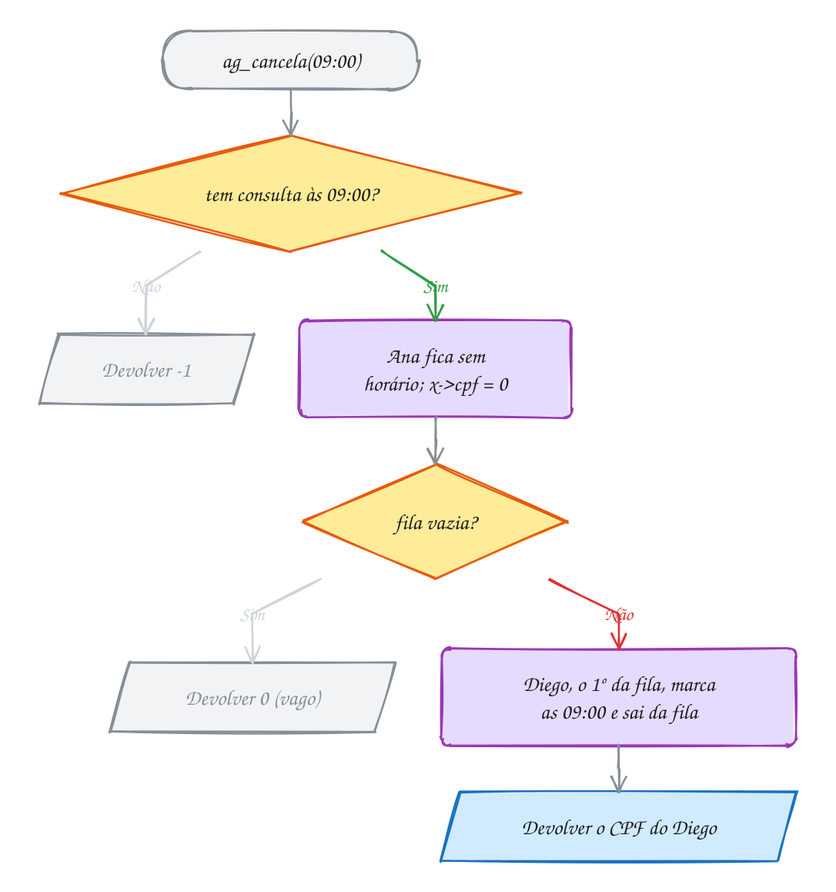
Exemplo A361 · Um dia cheio, marcado em ordem
#include <stdio.h>
#include "0181-agenda.h"
int main(void) {
Agenda *a = ag_cria();
if (a == NULL) {
return 1;
}
// 44 consultas de 15 em 15 minutos, das 07:00 às 17:45, marcadas em
// ordem de horário: o pior caso para uma BST comum
int n = 0;
unsigned semente = 2026; // gerador simples: CPFs inventados, sempre os mesmos
for (int hora = 7; hora <= 17; hora++) {
for (int min = 0; min < 60; min += 15) {
semente = semente * 1103515245u + 12345u;
int cpf = 100000000 + (int)((semente >> 4) % 800000000u);
char nome[24];
snprintf(nome, sizeof nome, "Paciente %02d", n + 1);
if (ag_cadastra(a, cpf, nome)) {
ag_marca(a, hora * 100 + min, cpf);
}
n++;
}
}
ag_estatisticas(a);
printf("(uma BST comum, com os horários em ordem, teria altura %d)\n", n - 1);
int tarde[50];
int k = ag_intervalo(a, 1600, 1759, tarde, 50);
printf("Depois das 16h: %d consultas:", k);
for (int i = 0; i < k; i++) {
printf(" %02d:%02d", tarde[i] / 100, tarde[i] % 100);
}
printf("\n");
ag_libera(a);
return 0;
}
// Saída:
// Horários na árvore: 44 (44 com consulta) | altura 7 | altura negra 4
// Pacientes: 44 em 101 posições | média de sondagens: 1.36
// Na fila de espera: 0
// (uma BST comum, com os horários em ordem, teria altura 43)
// Depois das 16h: 8 consultas: 16:00 16:15 16:30 16:45 17:00 17:15 17:30 17:45
gcc ~/LPEDC/material/A361.c ~/LPEDC/material/0181-agenda.c -o ~/LPEDC/material/A361 && ~/LPEDC/material/A361
Exemplo A362 · Encaixes ao longo do dia
#include <stdio.h>
#include "0181-agenda.h"
void cancela(Agenda *a, int horario) {
int quem = ag_cancela(a, horario);
printf("Cancela %02d:%02d: ", horario / 100, horario % 100);
if (quem > 0) {
printf("%s assume o horário\n", ag_nome(a, quem));
} else if (quem == 0) {
printf("ninguém na espera, o horário fica vago\n");
} else {
printf("não havia consulta\n");
}
}
int main(void) {
Agenda *a = ag_cria();
if (a == NULL) {
return 1;
}
int cpfs[] = {210000001, 210000002, 210000003, 210000004, 210000005, 210000006};
const char *nomes[] = {"Gil", "Ines", "Joel", "Kátia", "Luan", "Mara"};
for (int i = 0; i < 6; i++) {
ag_cadastra(a, cpfs[i], nomes[i]);
}
ag_marca(a, 1400, cpfs[0]);
ag_marca(a, 1430, cpfs[1]);
ag_marca(a, 1500, cpfs[2]);
ag_espera(a, cpfs[3]);
ag_espera(a, cpfs[4]);
ag_mostra_espera(a);
cancela(a, 1430); // Kátia, a primeira da fila, assume
cancela(a, 1400); // Luan assume
cancela(a, 1500); // fila vazia: vago
cancela(a, 1600); // nunca houve consulta
ag_mostra(a);
// a Mara liga e pega o horário vago das 15:00; a Kátia não pode marcar outro
printf("Mara marca 15:00: %s\n", ag_marca(a, 1500, cpfs[5]) ? "ok" : "recusado");
int h = ag_horario_de(a, cpfs[3]);
printf("Kátia marca 16:00: %s (já tem as %02d:%02d)\n",
ag_marca(a, 1600, cpfs[3]) ? "ok" : "recusado", h / 100, h % 100);
ag_mostra(a);
ag_mostra_espera(a);
ag_libera(a);
return 0;
}
// Saída:
// Espera: Kátia Luan
// Cancela 14:30: Kátia assume o horário
// Cancela 14:00: Luan assume o horário
// Cancela 15:00: ninguém na espera, o horário fica vago
// Cancela 16:00: não havia consulta
// 14:00 Luan
// 14:30 Kátia
// 15:00 (vago)
// Mara marca 15:00: ok
// Kátia marca 16:00: recusado (já tem as 14:30)
// 14:00 Luan
// 14:30 Kátia
// 15:00 Mara
// Espera: (ninguém)
gcc ~/LPEDC/material/A362.c ~/LPEDC/material/0181-agenda.c -o ~/LPEDC/material/A362 && ~/LPEDC/material/A362
Exercício E1081 · ★☆☆
Use a agenda (agenda.h). Cadastre Rosa (301000001), Saulo (301000002), Tania (301000003) e Ugo (301000004). Marque Rosa às 11:00, Saulo às 08:30 e Tania às 13:15. Tente marcar o Ugo às 08:30 e o CPF 301000005 (que não existe) às 09:00, mostrando uma mensagem para cada recusa, e mostre a agenda.
Saída esperada:
Ugo: 08:30 ocupado
CPF 301000005: não cadastrado
08:30 Saulo
11:00 Rosa
13:15 Tania
gcc ~/LPEDC/material/E1081.c ~/LPEDC/material/0181-agenda.c -o ~/LPEDC/material/E1081 && ~/LPEDC/material/E1081
Exercício E1083 · ★★☆
O plantão da clínica funciona em três turnos: manhã (00:00 a 11:59), tarde (12:00 a 17:59) e noite (18:00 a 23:59). Cadastre 10 pacientes (CPFs 500000001 a 500000010, nomes P1 a P10) e marque, nessa ordem, os horários 07:30, 11:15, 12:00, 19:45, 09:00, 14:00, 18:30, 11:59, 16:00 e 21:00. Com ag_intervalo, mostre quantas consultas há em cada turno e quais são.
Saída esperada:
manhã (4): 07:30 09:00 11:15 11:59
tarde (3): 12:00 14:00 16:00
noite (3): 18:30 19:45 21:00
gcc ~/LPEDC/material/E1083.c ~/LPEDC/material/0181-agenda.c -o ~/LPEDC/material/E1083 && ~/LPEDC/material/E1083
Exercício E1084 · ★★☆
Escreva remarca(a, cpf, novo), que muda a consulta do paciente para o horário novo (agenda.h). Ela recusa (devolve false) se o paciente não tem consulta ou se o horário novo já está ocupado (confira com ag_intervalo(a, novo, novo, ...)). Senão, desmarca o antigo com ag_cancela (se alguém da espera assumir, mostre quem) e marca o novo. Teste: Zeca (601000001) às 09:00, Alice (601000002) às 10:00 e Breno (601000003) na espera; remarque o Zeca para 10:00 e depois para 11:00.
Saída esperada:
Zeca para 10:00: recusado
Zeca para 11:00:
Breno assume as 09:00
ok
09:00 Breno
10:00 Alice
11:00 Zeca
Espera: (ninguém)
gcc ~/LPEDC/material/E1084.c ~/LPEDC/material/0181-agenda.c -o ~/LPEDC/material/E1084 && ~/LPEDC/material/E1084
Exercício E1085 · ★★★
A fila de espera da clínica ganhou prioridade: idosos (60 anos ou mais) passam na frente dos outros, mas, entre os idosos, vale a ordem de chegada (e entre os demais também). Escreva, com uma lista dupla circular com sentinela escrita por você (struct com nome, idade, ant e prox), entra(fila, nome, idade): o idoso entra logo DEPOIS do último idoso da fila (ou logo depois da sentinela, se não houver nenhum); os demais entram no fim. Sem nenhum caso especial para fila vazia. Chegam, nesta ordem: Ana 35, Beto 70, Caio 22, Dora 65, Enzo 81, Fabi 40. Mostre a fila depois de cada chegada e libere tudo no fim.
Saída esperada:
Ana
Beto* Ana
Beto* Ana Caio
Beto* Dora* Ana Caio
Beto* Dora* Enzo* Ana Caio
Beto* Dora* Enzo* Ana Caio Fabi
gcc ~/LPEDC/material/E1085.c ~/LPEDC/material/0181-agenda.c -o ~/LPEDC/material/E1085 && ~/LPEDC/material/E1085
30 exercícios que misturam os assuntos do módulo, no ritmo da prova. Arquivos P2801.c a P2830.c, em material/; resoluções em _respostas/28-estruturas-complementos/lista/.
Exercício P2801 · ★☆☆ · A fila do caixa com sentinela
O caixa rápido do mercado atende pela ordem de chegada. Escreva, do zero, uma lista dupla circular com nó sentinela (a struct da lista guarda o nó nil dentro dela): inicia(L), insere_fim(L, senha), mostra(L) do primeiro ao último, mostra_inverso(L) do último ao primeiro e libera(L). Entram as senhas 31, 32, 33 e 34. Mostre a fila nos dois sentidos e, no fim, se a sentinela da lista vazia aponta para ela mesma.
Saída esperada:
ida: [ 31 32 33 34 ]
volta: [ 34 33 32 31 ]
vazia: nil aponta para ela mesma? sim
Exercício P2802 · ★☆☆ · A chave guardada na sentinela
Na busca com sentinela do Cormen, a chave procurada é copiada para nil.chave antes do laço, e o laço só testa x->chave != k. Monte a lista com sentinela 4, 8, 15, 16, 23, 42 (insira no fim) e escreva busca(L, k, &comparacoes), que devolve o nó achado (ou &L->nil) e conta quantas vezes x->chave != k foi avaliado. Busque 15, 42 e 99.
Saída esperada:
15: achou, 3 comparações
42: achou, 6 comparações
99: não está, 7 comparações
Exercício P2803 · ★☆☆ · O grau de cada nó
O catálogo da livraria guarda os códigos 60, 30, 90, 20, 45, 75, 40, 50, 95 numa BST (insira nessa ordem). Escreva grau(x), que devolve quantos filhos x tem, e mostre, em ordem, cada chave com o grau entre parênteses. Depois mostre o grau da árvore (o maior grau) e quantas folhas ela tem.
Saída esperada:
em ordem: 20(0) 30(2) 40(0) 45(2) 50(0) 60(2) 75(0) 90(2) 95(0)
grau da árvore: 2 | folhas: 5
Exercício P2804 · ★☆☆ · Quantos nós em cada nível
Com a mesma árvore do P2803 (60, 30, 90, 20, 45, 75, 40, 50, 95), escreva profundidade(x), que sobe pelo ponteiro pai contando arestas, e altura(x), em arestas (vazia: -1). Mostre quantos nós há em cada nível, de 0 até a altura da árvore, e quais são.
Saída esperada:
nível 0: 60 (1 nós)
nível 1: 30 90 (2 nós)
nível 2: 20 45 75 95 (4 nós)
nível 3: 40 50 (2 nós)
altura: 3
Exercício P2805 · ★☆☆ · O fator de cada nó
Ainda com a árvore do P2803 (60, 30, 90, 20, 45, 75, 40, 50, 95), mostre em ordem cada chave com o seu fator de balanceamento, altura(esq) - altura(dir), e diga no fim se a árvore é AVL (todo fator em -1, 0 ou 1). Depois insira 55 e repita.
Saída esperada:
fatores: 20(0) 30(-1) 40(0) 45(0) 50(0) 60(1) 75(0) 90(0) 95(0)
é AVL
fatores: 20(0) 30(-2) 40(0) 45(-1) 50(-1) 55(0) 60(2) 75(0) 90(0) 95(0)
não é AVL
Exercício P2806 · ★☆☆ · Mínimo, máximo e sucessor
O painel de embarque guarda os horários (HHMM) 1210, 830, 1545, 700, 945, 1400, 1700, 900 numa BST com ponteiro para o pai. Escreva minimo(x), maximo(x) e sucessor(x) (o TREE-SUCCESSOR do Cormen: com subárvore direita, o mínimo dela; sem, sobe até chegar por um filho esquerdo). Mostre o primeiro e o último voo e o sucessor de 945, de 1210 e de 1700.
Saída esperada:
primeiro: 700 | último: 1700
depois de 945: 1210
depois de 1210: 1400
depois de 1700: nenhum
Exercício P2807 · ★☆☆ · Divisão e colisões
A locadora de bicicletas espalha as matrículas 1013, 2026, 3039, 4052, 5065, 1500, 2600 e 3700 numa tabela de m = 13 baldes com h(k) = k mod 13. Mostre o balde de cada matrícula, o número de colisões (chaves que caem num balde já ocupado) e repita com m = 10.
Saída esperada:
m = 13: 12 11 10 9 8 5 0 8 | colisões: 1
m = 10: 3 6 9 2 5 0 0 0 | colisões: 2
Exercício P2808 · ★☆☆ · Multiplicação em ponto flutuante
Escreva h(k, m) = floor(m · (k·A mod 1)) com A = (raiz de 5 - 1) / 2, em double. Para as senhas 10, 20, ..., 80 e m = 8, mostre o balde de cada uma e quantos baldes diferentes foram usados. Compare com k mod 8.
Saída esperada:
senha | mult | k % 8
10 | 1 | 2
20 | 2 | 4
30 | 4 | 6
40 | 5 | 0
50 | 7 | 2
60 | 0 | 4
70 | 2 | 6
80 | 3 | 0
baldes usados: multiplicação 7, divisão 4
gcc ~/LPEDC/material/P2808.c -o ~/LPEDC/material/P2808 -lm && ~/LPEDC/material/P2808
Exercício P2809 · ★☆☆ · Sondagem linear e a tabela final
O estacionamento tem 11 vagas e usa h(k, i) = (k mod 11 + i) mod 11. Entram as placas (só os números) 23, 45, 12, 34, 56, 9 e 1. Para cada uma, mostre a vaga e quantas sondagens fez; no fim, imprima a tabela inteira ("." para vaga livre).
Saída esperada:
23 -> vaga 1 (1 sondagens)
45 -> vaga 2 (2 sondagens)
12 -> vaga 3 (3 sondagens)
34 -> vaga 4 (4 sondagens)
56 -> vaga 5 (5 sondagens)
9 -> vaga 9 (1 sondagens)
1 -> vaga 6 (6 sondagens)
tabela: . 23 45 12 34 56 1 . . 9 .
Exercício P2810 · ★☆☆ · Pigeonhole dos dados
Num jogo de tabuleiro, foram anotados 15 lançamentos de um dado: 3, 6, 1, 3, 5, 2, 6, 6, 4, 1, 3, 5, 6, 2, 3. Ordene com o pigeonhole sort (uma casa para cada face, de 1 a 6) e mostre a sequência ordenada e quantas vezes saiu cada face.
Saída esperada:
frequências: 1:2 2:2 3:4 4:1 5:2 6:4
ordenados: 1 1 2 2 3 3 3 3 4 5 5 6 6 6 6
Exercício P2811 · ★★☆ · Sondagem quadrática
Refaça o estacionamento do P2809 (m = 11, placas 23, 45, 12, 34, 56, 9 e
Saída esperada:
23 -> vaga 1 (1 sondagens)
45 -> vaga 2 (2 sondagens)
12 -> vaga 5 (3 sondagens)
34 -> vaga 10 (4 sondagens)
56 -> vaga 6 (5 sondagens)
9 -> vaga 9 (1 sondagens)
1 -> vaga 4 (6 sondagens)
tabela: . 23 45 . 1 12 56 . . 9 34
total de sondagens: 22
Exercício P2812 · ★★☆ · Dispersão dupla
Agora com dispersão dupla, numa tabela de m = 13: h(k, i) = (h1(k) + i · h2(k)) mod 13, com h1(k) = k mod 13 e h2(k) = 1 + (k mod 11). Insira 14, 27, 40, 53, 66, 79 (todas com h1 = 1) e 5. Mostre o passo h2, a posição e as sondagens de cada uma, a tabela final e o total de sondagens.
Saída esperada:
14: passo 4 -> 1 (1 sondagens)
27: passo 6 -> 7 (2 sondagens)
40: passo 8 -> 9 (2 sondagens)
53: passo 10 -> 11 (2 sondagens)
66: passo 1 -> 2 (2 sondagens)
79: passo 3 -> 4 (2 sondagens)
5: passo 6 -> 5 (1 sondagens)
tabela: . 14 66 . 79 5 . 27 . 40 . 53 .
total de sondagens: 12
Exercício P2813 · ★★☆ · A lápide no meio do caminho
Numa tabela de m = 7 com sondagem linear, cada posição tem um estado: LIVRE, OCUPADA ou LAPIDE. Escreva insere (reaproveita a primeira lápide do caminho), busca (para na LIVRE, passa reto pela LAPIDE) e remove (marca LAPIDE). Insira 10, 17, 24 e 5 (os três primeiros começam no 3), remova o 17, busque o 24, insira 31 e mostre a tabela depois de cada passo ("." livre, "x" lápide).
Saída esperada:
inseridos: . . . 10 17 24 5
tira 17: . . . 10 x 24 5
busca 24: posição 5
insere 31: . . . 10 31 24 5
Exercício P2814 · ★★☆ · Do maior para o menor com o antecessor
A tabela de recordes do fliperama guarda as pontuações 5200, 3100, 8800, 2500, 4700, 7600, 9900, 4100 numa BST com ponteiro para o pai. Escreva antecessor(x) (o espelho do sucessor: com subárvore esquerda, o máximo dela; sem, sobe até chegar por um filho direito) e mostre o ranking, do maior para o menor, sem recursão: comece no máximo e ande pelo antecessor. Mostre também o antecessor do 4700 e do 2500.
Saída esperada:
ranking: 9900 8800 7600 5200 4700 4100 3100 2500
antes de 4700: 4100 | antes de 2500: nenhum
Exercício P2815 · ★★☆ · O fiscal da rubro-negra
Três árvores foram coloridas à mão e você tem que conferir se são rubro- negras. Cada nó tem chave, cor ('V' ou 'P') e dois filhos (NULL faz o papel da folha nil, preta). Escreva fiscal(x), que devolve a altura negra de x (pretos de x até NULL, contando x, sem contar o NULL) ou -1 se: um vermelho tem filho vermelho, ou os dois lados têm alturas negras diferentes. Confira também a raiz preta. As árvores (pré-ordem, com o filho vazio como -):
A: 20P (10V (5P, 15P), 30P (-, 35V))
B: 20P (10V (5V, 15P), 30P)
C: 20P (10P (5P, -), 30P)
Monte-as com uma função novo(chave, cor, esq, dir) que usa malloc.
Saída esperada:
A: rubro-negra, altura negra 2
B: não é rubro-negra
C: não é rubro-negra
Exercício P2816 · ★★☆ · Escreva a remoção da AVL
Escreva, do zero, uma AVL com inserção e remoção (nó com altura guardada, rotações à esquerda e à direita e um equilibra que serve para as duas operações; na remoção de nó com dois filhos, use o sucessor). Conte as rotações simples num contador global (a dupla conta 2). Insira 30, 20, 40, 10, 25, 35, 50, 5, 15, 45, 1 e remova 35, 40 e 25, mostrando a pré-ordem, a altura e as rotações de cada remoção.
Saída esperada:
início: pré 30 10 5 1 20 15 25 40 35 50 45 | altura 3
tira 35: pré 30 10 5 1 20 15 25 45 40 50 | altura 3 | rotações 2
tira 40: pré 30 10 5 1 20 15 25 45 50 | altura 3 | rotações 0
tira 25: pré 30 10 5 1 20 15 45 50 | altura 3 | rotações 0
Exercício P2817 · ★★☆ · Quem é estável?
Os pedidos do delivery chegam com número (1 a 8, a ordem de chegada) e bairro (código 1 a 3): (1,2) (2,1) (3,2) (4,3) (5,1) (6,3) (7,2) (8,1). Ordene cópias pelo bairro com a inserção, com a seleção e com o pigeonhole (uma fila por bairro), e escreva estavel(v, n): entre vizinhos de mesmo bairro, o número de chegada tem que crescer. Mostre cada resultado como numero:bairro e o veredito.
Saída esperada:
inserção: 2:1 5:1 8:1 1:2 3:2 7:2 4:3 6:3 | estável
seleção: 2:1 5:1 8:1 1:2 7:2 3:2 4:3 6:3 | não estável
casas: 2:1 5:1 8:1 1:2 3:2 7:2 4:3 6:3 | estável
Exercício P2818 · ★★☆ · A classificação da corrida
Na corrida de rua do bairro, a classificação é pelo tempo (em segundos, o menor primeiro); no empate, o mais velho fica na frente; se ainda empatar, o nome em ordem alfabética. Escreva o comparador composto e ordene com qsort: Lia 1520 s 34 anos, Davi 1490 s 28, Rita 1520 s 41, Caio 1490 s 28, Bia 1610 s 22, Teo 1520 s 41. Mostre posição, nome, tempo em min:s e idade.
Saída esperada:
1. Caio 24:50 28 anos
2. Davi 24:50 28 anos
3. Rita 25:20 41 anos
4. Teo 25:20 41 anos
5. Lia 25:20 34 anos
6. Bia 26:50 22 anos
Exercício P2819 · ★★☆ · Aniversários em duas passadas
O RH quer os aniversários do ano em ordem de mês e, dentro do mês, de dia. Faça duas passadas de pigeonhole estável: primeiro pelo dia (31 casas), depois pelo mês (12 casas). Datas (dia/mês) e nomes: Ana 15/3, Beto 2/11, Cris 28/3, Duda 2/3, Enzo 15/1, Fábio 9/11, Gil 1/12, Hana 30/1. Mostre a lista depois de cada passada.
Saída esperada:
por dia: Gil 1/12 Beto 2/11 Duda 2/3 Fabio 9/11 Ana 15/3 Enzo 15/1 Cris 28/3 Hana 30/1
por mês: Enzo 15/1 Hana 30/1 Duda 2/3 Ana 15/3 Cris 28/3 Beto 2/11 Fabio 9/11 Gil 1/12
Exercício P2820 · ★★☆ · Múltiplos de 32 na tabela
Os lotes do almoxarifado têm números múltiplos de 32: 32, 64, ..., 3200 (100 lotes). Compare, numa tabela de m = 32 baldes, a divisão k mod 32 e a multiplicação em inteiros (k * 2654435769u) >> 27, com uint32_t. Mostre para cada uma quantos baldes ficaram vazios e o tamanho do balde mais cheio. Depois repita a divisão com m = 31.
Saída esperada:
vazios 31 | mais cheio 100 | divisão, m = 32
vazios 5 | mais cheio 5 | multiplicação, m = 32
vazios 0 | mais cheio 4 | divisão, m = 31
Exercício P2821 · ★★★ · A rubro-negra do Cormen, do zero
Escreva a rubro-negra clássica com a sentinela nil (um nó preto global que faz o papel de toda folha e do pai da raiz): rotações à esquerda e à direita que acertam o pai, inserção como na BST com o nó novo vermelho e o conserto com os três casos do tio (e os espelhos). Conte quantas vezes cada caso rodou. Insira 30, 15, 60, 10, 20, 50, 70, 5, 1, 55, 65, 80 e 90 e mostre a pré-ordem (vermelhos com *), as contagens, a altura negra e o resultado de um fiscal das propriedades 4 e 5.
Saída esperada:
pré: 30 15 5 1* 10* 20 60 50 55* 70* 65 80 90*
caso 1: 5 | caso 2: 0 | caso 3: 1
altura negra: 3 | fiscal: ok
Exercício P2822 · ★★★ · A remoção que esqueceu de subir
Ache o bug. A cozinha guarda os pedidos numa AVL, e o pedido 30 foi entregue. A remoção apaga o nó direitinho, mas a árvore fica torta: o fiscal reclama. O erro está no FIM de remove_chave: a volta da recursão só recalcula a altura, sem rebalancear. Conserte e rode de novo.
Saída esperada:
pré: 12 6 3 1 4 9 8 10 20 16 14 18 26 25 28
altura 3 | rotações na remoção: 3
fiscal: AVL ok
Resposta esperada: troque "atualiza(r); return r;" por "return equilibra(r);" no fim de remove_chave. Com a correção, a saída é a de cima.
Exercício P2823 · ★★★ · O passo zero da dispersão dupla
Ache o bug. O guarda-volumes usa dispersão dupla com m = 11: h1(k) = k mod 11 e um passo h2(k). Entram os cartões 21, 32, 10 e 43, todos com h1 = 10. O cartão 10 "não coube", com a tabela quase vazia. O erro está em UMA conta do passo. Conserte e rode de novo.
Saída esperada:
21: passo 2 -> 10
32: passo 3 -> 2
10: passo 1 -> 0
43: passo 4 -> 3
tabela: 10 . 32 43 . . . . . . 21
Resposta esperada: o passo é 1 + k % (M - 1), não k % (M - 1). Com a correção, a saída é a de cima.
Exercício P2824 · ★★★ · Lápides demais: hora de reconstruir
Uma tabela de sondagem linear com m = 13 sofre com as lápides. Escreva insere, busca (contando sondagens) e remove (com lápide). Insira as chaves 1, 14, 27, 40, 53 e 66 (todas começam no 1), remova 14, 27, 40 e 53 e meça quantas sondagens custa buscar o 79 (que não está). Depois reconstrua: crie uma tabela nova só com as chaves vivas, meça de novo e mostre as duas tabelas ("." livre, "x" lápide).
Saída esperada:
antes: . 1 x x x x 66 . . . . . .
busca 79: 7 sondagens
depois: . 1 66 . . . . . . . . . .
busca 79: 3 sondagens
Exercício P2825 · ★★★ · As três sondagens lado a lado
Compare as três sondagens numa tabela de m = 17 com as mesmas chaves, nesta ordem: 20, 37, 54, 71, 88, 5, 22, 39 (as cinco primeiras começam no 3). Linear: (k mod 17 + i) mod 17; quadrática: (k mod 17 + i * i) mod 17; dupla: (k mod 17 + i * (1 + k mod 16)) mod 17. Para cada método, imprima a tabela final e o total de sondagens.
Saída esperada:
linear: . . . 20 37 54 71 88 5 22 39 . . . . . . | 30 sondagens
quadrática: . . 88 20 37 5 22 54 . 39 . . 71 . . . . | 21 sondagens
dupla: . . 22 20 . 5 . . . 37 54 71 88 39 . . . | 15 sondagens
Exercício P2826 · ★★★ · Relatório por intervalo
O sistema da farmácia guarda os códigos dos remédios 412, 157, 890, 233, 501, 678, 120, 345, 999, 460 numa BST com pai. Escreva teto(raiz, a) (o primeiro nó com chave >= a, descendo da raiz) e sucessor(x), e com eles relatorio(raiz, a, b), que mostra em ordem as chaves de a até b e conta quantas chamadas de sucessor foram feitas. Teste [200, 500], [0, 150], [900, 2000] e [600, 650].
Saída esperada:
[200, 500]: 233 345 412 460 (4 sucessores)
[0, 150]: 120 (1 sucessores)
[900, 2000]: 999 (1 sucessores)
[600, 650]: (0 sucessores)
Exercício P2827 · ★★★ · A AVL mais magra de cada altura
A AVL com o menor número de nós para a altura h (a árvore de Fibonacci) tem N(h) = N(h - 1) + N(h - 2) + 1 nós, com N(0) = 1 e N(1) = 2. Calcule N(h) de baixo para cima, para h de 0 a 12, e mostre também o máximo, 2^(h+1) - 1, e a razão h / log2(N(h) + 1), que cresce devagar em direção a 1,44: a AVL mais torta é no máximo uns 44% mais alta que a perfeita.
Saída esperada:
h | mínimo | máximo | h / log2(N + 1)
0 | 1 | 1 | 0.00
1 | 2 | 3 | 0.63
2 | 4 | 7 | 0.86
3 | 7 | 15 | 1.00
4 | 12 | 31 | 1.08
5 | 20 | 63 | 1.14
6 | 33 | 127 | 1.18
7 | 54 | 255 | 1.21
8 | 88 | 511 | 1.24
9 | 143 | 1023 | 1.26
10 | 232 | 2047 | 1.27
11 | 376 | 4095 | 1.29
12 | 609 | 8191 | 1.30
gcc ~/LPEDC/material/P2827.c -o ~/LPEDC/material/P2827 -lm && ~/LPEDC/material/P2827
Exercício P2828 · ★★★ · A tabela do campeonato em duas passadas
A liga do bairro tem os times em ordem alfabética, com pontos (0 a 30) e saldo de gols (-10 a 10): Aleixo 13 +4, Betânia 16 -1, Coroado 13 +4, Dom Pedro 16 +6, Educandos 9 -3, Flores 13 -2, Glória 16 -1. A classificação é por pontos, depois saldo (os dois do maior para o menor) e, no empate total, nome. Faça com duas passadas de pigeonhole estável, esvaziando as casas da maior para a menor: primeiro pelo saldo (21 casas), depois pelos pontos (31 casas). Mostre a tabela.
Saída esperada:
1. Dom Pedro: 16 pontos, saldo +6
2. Betânia: 16 pontos, saldo -1
3. Glória: 16 pontos, saldo -1
4. Aleixo: 13 pontos, saldo +4
5. Coroado: 13 pontos, saldo +4
6. Flores: 13 pontos, saldo -2
7. Educandos: 9 pontos, saldo -3
Exercício P2829 · ★★★ · O cache da biblioteca
O sistema da biblioteca guarda as 3 páginas do catálogo mais recentes num cache. A ordem de uso fica numa lista dupla circular com sentinela (a mais recente logo depois da sentinela) e, para achar a página sem percorrer a lista, uma tabela de sondagem linear com m = 7 leva o número da página ao nó dela (com lápide na remoção). A cada acesso: se a página está no cache (acerto), o nó vai para a frente; senão (falta), se o cache está cheio, sai o último da lista (o menos recente), e a página nova entra na frente. Acessos: 7 0 1 2 0 3 0 4 2 3 0 3 2. Mostre, a cada acesso, A (acerto) ou F (falta) e o cache; no fim, o total de faltas.
Saída esperada:
7: F [ 7 ]
0: F [ 0 7 ]
1: F [ 1 0 7 ]
2: F [ 2 1 0 ]
0: A [ 0 2 1 ]
3: F [ 3 0 2 ]
0: A [ 0 3 2 ]
4: F [ 4 0 3 ]
2: F [ 2 4 0 ]
3: F [ 3 2 4 ]
0: F [ 0 3 2 ]
3: A [ 3 0 2 ]
2: A [ 2 3 0 ]
faltas: 9 de 13
Exercício P2830 · ★★★ · O painel de voos
O painel do aeroporto guarda os horários (HHMM) 1415, 905, 1830, 640, 1120, 1600, 2210, 1000 numa BST com ponteiro para o pai. Escreva teto(r, h) (o primeiro voo às h ou depois), piso(r, h) (o último às h ou antes) e a remoção do Cormen com transplanta(raiz, u, v), que põe a subárvore v no lugar de u acertando o pai (no caso dos dois filhos, o sucessor y sobe para o lugar do nó removido). Para as horas 1130 e 1415, mostre o piso e o teto; cancele os voos 1415 (a raiz, com dois filhos) e 640 e repita, mostrando também a árvore em pré-ordem.
Saída esperada:
pré: 1415 905 640 1120 1000 1830 1600 2210
1130: antes 1120, depois 1415
1415: antes 1415, depois 1415
sem 1415 e 640: pré 1600 905 1120 1000 1830 2210
1130: antes 1120, depois 1600
1415: antes 1120, depois 1600
Problemas para resolver no papel e, quando fizer sentido, num arquivo .c seu
usando os TADs do módulo. Eles misturam os assuntos.
1. A lista que não tem ponta. Numa lista com sentinela que contém 10, 20 e
30, faça, nesta ordem: insira 5 no começo, remova o último, insira 40 depois
do último (sent_insere_apos(L, L->nil.ant, 40)), busque o 20 e remova o nó
achado. Como fica a lista, de frente para trás e de trás para a frente?
Quantas vezes você precisou de um if para tratar uma ponta?
[ 5 10 40 ] e, de trás, [ 40 10 5 ]. Nenhum if: a inserção no
começo é "depois da sentinela", a remoção do último é sent_remove(L, L->nil.ant) e a inserção no fim é "depois do último". Caminho: faça as
operações uma a uma desenhando os quatro ponteiros de cada inserção e os dois
de cada remoção.
2. Sucessores numa árvore torta. Insira 40, 20, 60, 10, 30, 50, 70, 25, 35 e 33, nesta ordem, numa BST com pai. Qual é o sucessor de 35, o antecessor de 40, o sucessor de 30 e o antecessor de 25? Qual é o grau do 30, a profundidade do 33, a altura da árvore e o fator de balanceamento do 20?
Sucessor de 35: 40 (caso 2: sobe por 30 e 20, que foram alcançados pela
direita, até o 40, alcançado pela esquerda). Antecessor de 40: 35 (o
máximo da esquerda). Sucessor de 30: 33 (o mínimo da subárvore do 35).
Antecessor de 25: 20 (sobe: 25 é filho esquerdo do 30, que é filho
direito do 20). Grau do 30: 2; profundidade do 33: 4; altura: 4;
fator do 20: altura(10) - altura(30) = 0 - 2 = -2. Confira com arvpai.h.
3. A AVL que esvazia. Insira 1 a 7 numa AVL (sai a árvore perfeita com o 4 na raiz) e remova 1, 2 e 3, nesta ordem. Quantas rotações cada remoção faz e qual é a pré-ordem no fim?
Tirar 1: 0 rotações; tirar 2: 0; tirar 3: 1 (o 4 fica sem filhos à esquerda e com a subárvore do 6, de altura 1, à direita: fator -2, filho 6 com fator 0, rotação simples à esquerda). Pré-ordem final: 6 4 5 7. Repare no fator 0 do filho: só a remoção produz esse caso, e ele pede a rotação simples.
4. O menor AVL de cada altura. Qual é o menor número de nós de uma AVL de altura 5? Quantas rotações a remoção da maior chave faz nessa árvore?
N(h) = N(h - 1) + N(h - 2) + 1, com N(0) = 1 e N(1) = 2: 1, 2, 4, 7, 12, 20. É a árvore de Fibonacci do E1056. Tirar a maior chave dela faz 2 rotações: em geral, ⌊h/2⌋, uma a cada dois níveis, porque cada conserto encurta a subárvore e passa o desequilíbrio para o avô.
5. Rubro-negra em ordem. Insira 1 a 8, em ordem, numa rubro-negra clássica. Qual é a pré-ordem (marque os vermelhos), quantas vezes rodou cada caso do conserto, quantas rotações houve, qual é a altura e a altura negra?
Pré-ordem 4 2* 1 3 6* 5 7 8*. Caso 1: 3 vezes; caso 2: 0; caso
3: 4 vezes, portanto 4 rotações. Altura 3, altura negra 2.
Com chaves crescentes, o novo nó sempre fica "em linha" com o pai e o avô
(filho direito de filho direito): nunca há triângulo, então o caso 2 não
aparece. Confira com T->casos do vermelhopreto.h.
6. O limite da rubro-negra. Uma rubro-negra tem 1000 nós. Qual é a maior altura possível? E a menor? Uma rubro-negra com altura negra 4 pode ter 12 nós?
Maior: h ≤ 2 log₂(1001) ≈ 19,9, então no máximo 19. Menor: a de qualquer árvore binária com 1000 nós, ⌈log₂(1001)⌉ - 1 = 9. Com altura negra 4 a árvore tem pelo menos 2⁴ - 1 = 15 nós, então não pode ter 12. O A353 mede: 1000 chaves crescentes dão altura 16.
7. Duas funções, uma chave. Para k = 1000 e m = 16, calcule o balde pelo método da divisão e pela multiplicação em inteiros (s = 2654435769, p = 4). E para k = 1001?
Divisão: 1000 % 16 = 8; 1001 % 16 = 9 (chaves vizinhas, baldes
vizinhos). Multiplicação: os 4 bits altos de (1000 · s) mod 2³² dão 0; para
1001, 10. A multiplicação espalha chaves vizinhas para longe uma da outra,
mas não promete evitar o balde 0. Confira com esp_mult_desloca.
8. Três sondagens, mesmas chaves. Numa tabela de m = 11, insira 4, 15, 26, 37 e 48 (todas começam no 4) com sondagem linear e com quadrática (h + i²). Em que posição cada uma fica e quantas sondagens custa a última?
Linear: 4, 5, 6, 7, 8; a 48 faz 5 sondagens. Quadrática: 4, 5, 8, 2 (4 + 9 = 13, mod 11) e 9 (4 + 16 = 20, mod 11); a 48 também faz 5. As posições mudam, mas como todas começam no 4, a quadrática repete a mesma trilha para todas: agrupamento secundário. Só a dispersão dupla separaria as trilhas.
9. Dupla com passo bom e passo ruim. Numa tabela de m = 11 com h₁(k) = k mod 11 e h₂(k) = 1 + (k mod 10), insira 22, 33, 44, 55 e 66. Depois diga por que h₂(k) = k mod 10 (sem o 1) seria um erro.
Posições 0, 4, 5, 6 e 7, com 1, 2, 2, 2 e 2 sondagens (passos 3, 4, 5, 6
e 7 a partir do 0). Sem o + 1, as chaves terminadas em 0 (como 110) teriam
passo 0: a sequência ficaria parada na mesma posição e a inserção
falharia com a tabela quase vazia.
10. Lista de aprovados. O resultado do vestibular tem cidade, curso e
nota. A lista final é por cidade; dentro da cidade, por curso; dentro do
curso, da maior nota para a menor. Usando só ordenações estáveis de uma chave
por vez, quais passadas você faz e em que ordem? E com qsort?
Da chave menos importante para a mais importante: nota (decrescente),
depois curso, depois cidade, todas com método estável (inserção, merge,
counting ou pigeonhole, se o intervalo for pequeno). Com qsort, uma
passada com um comparador composto: compara cidade; se empatar, curso; se
empatar, a nota ao contrário. Como o qsort não é estável, um último
desempate (nome ou matrícula) deixa a ordem determinada.
11. Custos da agenda. Na agenda do 0181, com n pacientes cadastrados, c horários na árvore e f pessoas na fila, qual é o custo de: cadastrar, marcar, achar a próxima consulta depois de certa hora, cancelar com fila e listar k consultas de um intervalo?
Cadastrar: O(1) em média (a carga fica abaixo de 1/2). Marcar: O(log
c) na rubro-negra, mais O(1) na hash; se o paciente estava na fila,
ag_marca ainda o procura nela, O(f). Próxima consulta: O(log c) se
não houver horários vagos no caminho (teto + sucessor). Cancelar: O(log c) +
O(1) + a marcação do primeiro da fila. Intervalo: O(log c + k).
Questões objetivas no formato da Prova de Conhecimentos do PPGI: uma alternativa certa. Onde o enunciado não disser outra coisa, a raiz fica no nível 1 e a folha tem altura 1.
1. A lista duplamente encadeada abaixo é circular, com nó sentinela
(nil). A função remove o nó x, que é um nó real da lista:
typedef struct No {
int chave;
struct No *ant, *prox;
} No;
void remover(No *x) {
free(x);
x->ant->prox = x->prox;
x->prox->ant = x->ant;
}
Qual é o defeito?
x ser o único nó da lista.x é a sentinela, que nunca pode sair.x->ant e x->prox depois do free(x); o free deveria vir depois das duas atribuições.x->ant e x->prox para a lista não ficar com ponteiros soltos.D. O free devolve o bloco, e as três linhas seguintes leem e usam o
conteúdo dele: é uso depois de liberar, comportamento indefinido (o valgrind
acusa "Invalid read", e o gcc avisa com -Wall). A ordem certa é religar os
vizinhos e só então liberar. Com a sentinela, o único nó não pede caso
especial (A), e a ordem das duas religações tanto faz (C). Veja 0174.
2. Numa ABB sem balanceamento são inseridas as chaves
60 35 85 20 45 75 95 40 55 50, nesta ordem. Usando o TREE-SUCCESSOR do
Cormen (com ponteiro para o pai), quais são o sucessor do 45 e o sucessor do
60, respectivamente?
A. Se o nó tem filho direito, o sucessor é o mínimo dessa subárvore. O 45 tem o 55 à direita, e o mínimo a partir dele, descendo pela esquerda, é o 50 (o 55 é só o filho direito, não o mínimo). O 60 tem o 85 à direita, e o 85 tem o 75 à esquerda. Sem filho direito, sobe-se até o primeiro ancestral de quem o nó descende pela esquerda. Veja 0175.
3. Uma árvore binária perfeita (todos os níveis completos) tem 63 nós. Qual é a altura dela e quantas folhas ela tem?
C. O nível k tem 2^(k-1) nós: 1 + 2 + 4 + 8 + 16 + 32 = 63, seis níveis,
logo a altura é 6 (folha com altura 1). As folhas são o último nível: 32,
que é (n + 1)/2. A (A) usaria altura em arestas (5) e erraria as folhas. Se a
prova trocasse para a altura em arestas, a resposta mudaria para 5: leia a
convenção do enunciado. Veja 0175.
4. Numa AVL vazia são inseridas as chaves 60 30 80 20 40 70 90 10 50 65,
nesta ordem (nenhuma rotação acontece). Em seguida remove-se o 90. Qual é a
pré-ordem depois da remoção e do rebalanceamento?
60 30 20 10 40 50 80 70 65; nenhuma rotação60 30 20 10 40 50 70 65 80; rotação simples à direita no 8060 30 20 10 40 50 65 70 80; rotação dupla (esquerda no 70, direita no 80)60 30 20 10 40 50 70 65 80; rotação dupla (esquerda no 70, direita no 80)30 20 10 60 40 50 80 70 65; rotação simples à direita na raiz 60B. O 90 é folha e sai. O 80 fica com o 70 (e o 65 embaixo) à esquerda e nada à direita: fator 2. O filho esquerdo, 70, tem fator 1 (o 65 à esquerda dele): caso esquerda-esquerda, uma rotação simples à direita no 80 faz o 70 subir, com o 65 e o 80 de filhos. A (A) deixa a árvore desequilibrada. A (C) e a (D) seriam o caso zigue-zague, que exigiria o 65 à direita do 70. A raiz continua com fator 1, sem rotação (E). Veja 0176.
5. Considere as afirmações:
I. Na rubro-negra clássica, uma inserção faz no máximo 2 rotações.
II. Na rubro-negra clássica, uma remoção faz no máximo 3 rotações.
III. Na AVL, uma remoção faz no máximo 1 rotação, com certeza.
Está(ão) correta(s):
E. São os limites do Cormen: RB-INSERT-FIXUP rotaciona no máximo duas
vezes (o recolorir é que pode subir pela árvore) e RB-DELETE-FIXUP, no
máximo três. Na III, "com certeza" derruba: numa AVL, depois de rotacionar, a
subárvore pode encolher e o desequilíbrio subir, até uma rotação por nível. É
a diferença entre as duas árvores na remoção. Veja 0176 e 0177.
6. Uma tabela hash com m = 1000 posições usa o método da multiplicação,
h(k) = ⌊m · (k · A mod 1)⌋, com A = (√5 - 1)/2 ≈ 0,6180339887. Para a
chave k = 350, o valor de h(k) é:
A. 350 · 0,6180339887 = 216,3119...; o mod 1 fica só com a parte
fracionária, 0,3119...; multiplicando por 1000 dá 311,9..., e o piso é 311.
A (B) é a parte inteira, que o mod 1 descarta; a (D), o complemento
1 - 0,3119; a (C), o próprio A · 1000. Veja 0178.
7. Uma tabela de endereçamento aberto tem m = 11 e usa sondagem
quadrática, h(k, i) = (k mod 11 + i²) mod 11. Inserem-se, nesta ordem, as
chaves 14 25 36 47 5 16 27 numa tabela vazia. Conte uma colisão cada vez que
a sondagem cai numa posição ocupada. Em que posição fica o 27 e quantas
colisões houve ao todo?
D. O 14 vai para a posição 3. O 25 (também 3): tenta 3 e 4, 1 colisão. O 36: 3, 4 e 3 + 4 = 7, 2 colisões. O 47: 3, 4, 7 e 3 + 9 = 12 mod 11 = 1, 3 colisões. O 5 cai livre na 5. O 16 (também 5): 5 e 6, 1 colisão. O 27 (também 5): 5, 6 e 5 + 4 = 9, 2 colisões. Total 0 + 1 + 2 + 3 + 0 + 1 + 2 = 9. Com sondagem linear, o total seria 15: a quadrática desfaz os blocos. Veja 0179.
8. Considere as afirmações sobre endereçamento aberto:
I. Na sondagem linear, chaves com h'(k) diferentes podem passar a seguir a
mesma trilha: é o agrupamento primário.
II. Na dispersão dupla, duas chaves com o mesmo h₁(k) seguem
necessariamente a mesma sequência de sondagem.
III. Na sondagem quadrática (h'(k) + i²) mod m, com m primo, a sequência
de uma chave visita só cerca de metade das posições.
IV. Ao remover uma chave, a posição deve virar lápide, e não livre.
Estão corretas:
B. A I descreve o bloco da linear: quem cai em qualquer ponto dele vai
para o fim. A II cai no "necessariamente": o passo h₂(k) depende da chave,
então chaves com o mesmo h₁ costumam andar com passos diferentes (na
quadrática, sim, a trilha é a mesma: colisão secundária). Na III, os
quadrados módulo um primo m assumem só (m + 1)/2 valores. Na IV, uma posição
livre cortaria o caminho de quem passou por ali. Veja 0179.
9. A lista de chamada, em ordem alfabética, traz (nome, turma, nota): Ana (2, 7), Bia (1, 9), Caio (2, 5), Duda (3, 7), Edu (1, 5), Fabi (3, 9), Gil (2, 9), Hana (1, 7) e Ivo (2, 7). Quer-se ordenar por turma crescente e, dentro da turma, por nota crescente, com empates na ordem original. Fazem-se duas passadas estáveis de pigeonhole: primeiro pela nota, depois pela turma. Qual é a ordem final?
Bia Edu Hana Ana Caio Gil Ivo Duda FabiEdu Caio Hana Ana Ivo Duda Bia Gil FabiEdu Hana Bia Caio Ivo Ana Gil Duda FabiBia Hana Edu Gil Ana Ivo Caio Fabi DudaEdu Hana Bia Caio Ana Ivo Gil Duda FabiE. Depois da passada pela nota: Caio Edu Ana Duda Hana Ivo Bia Fabi Gil (a Ana antes do Ivo, empatados). A passada estável pela turma separa nas turmas 1 (Edu, Hana, Bia), 2 (Caio, Ana, Ivo, Gil) e 3 (Duda, Fabi), mantendo dentro de cada uma a ordem anterior. A (A) é só a passada pela turma, sem ordenar a nota; a (B) inverte as passadas (a turma vira o critério secundário); a (C) troca Ana e Ivo, o que um método não estável pode fazer; a (D) usa nota decrescente. Veja 0180.
10. Considere as afirmações:
I. O pigeonhole sort é estável quando cada casa é uma fila.
II. O custo O(n + r), com r o número de valores possíveis, faz dele sempre
mais rápido que o merge sort.
III. Para ordenar por chave composta com passadas estáveis, ordena-se
primeiro pela chave menos importante e por último pela mais importante.
IV. O selection sort é estável, pois só troca quando acha um elemento
estritamente menor.
Estão corretas:
C. A I vale: a fila devolve quem entrou primeiro. A II cai no "sempre":
se r for muito maior que n (chaves de 0 a 10^9 para mil registros), o
n + r é pior que n log n. A III é a regra do radix LSD: a última passada manda
e as anteriores só desempatam. Na IV, a troca é a distância e pula por cima de
iguais: em 2a 2b 1, o 1 troca com o 2a e o 2a termina depois do 2b.
Veja 0180 e 0096.
qsort).uint32_t). Disponível em: https://en.cppreference.com/w/c/types/integer.